<!doctype html>
<html lang="en">
<head>
  <meta charset="utf-8">
  <meta name="viewport" content="width=device-width, initial-scale=1">
  <title>arxiv digest — 2026-06-11</title>
  <style>
:root {
  --bg: #ffffff;
  --fg: #1f2328;
  --muted: #59636e;
  --border: #d0d7de;
  --card: #f6f8fa;
  --link: #0969da;
}
body {
  max-width: 980px;
  margin: 0 auto;
  padding: 2rem 1rem 5rem;
  font-family: -apple-system, BlinkMacSystemFont, "Segoe UI", Helvetica, Arial, sans-serif;
  line-height: 1.55;
  color: var(--fg);
  background: var(--bg);
}
a { color: var(--link); }
img { max-width: 100%; height: auto; }
pre, code { background: var(--card); border-radius: 6px; }
pre { padding: 1rem; overflow-x: auto; }
blockquote { border-left: 4px solid var(--border); padding-left: 1rem; color: var(--muted); }
details { margin: 0.6rem 0; }
summary { cursor: pointer; font-weight: 600; }
.paper-figures-scroll {
  display: flex;
  gap: 1rem;
  overflow-x: auto;
  overscroll-behavior-x: contain;
  padding: 0.75rem 0.25rem 1rem;
  margin: 1rem 0 1.25rem;
  border-top: 1px solid var(--border);
  border-bottom: 1px solid var(--border);
  scroll-snap-type: x proximity;
}
.paper-figure-card {
  flex: 0 0 min(260px, 72vw);
  scroll-snap-align: start;
  background: var(--card);
  border: 1px solid var(--border);
  border-radius: 12px;
  padding: 0.55rem;
}
.paper-figure-card img {
  display: block;
  width: 100%;
  max-height: 240px;
  object-fit: contain;
  background: white;
  border-radius: 8px;
}
.paper-figure-caption {
  display: block;
  margin-top: 0.5rem;
  color: var(--muted);
  font-size: 0.85rem;
}
.figure-strip-hint {
  color: var(--muted);
  font-size: 0.9rem;
  margin-bottom: -0.3rem;
}
</style>
  <!-- MathJax: renders $...$ inline math and $$...$$ display math, plus
       \(...\) and \[...\]. Loaded from the official CDN; works offline
       once cached. Configured to skip code/pre blocks so arxiv IDs that
       look like dollar amounts don't get mangled. -->
  <script>
    window.MathJax = {
      tex: {
        inlineMath: [['$', '$'], ['\\(', '\\)']],
        displayMath: [['$$', '$$'], ['\\[', '\\]']],
        processEscapes: true,
        processEnvironments: true
      },
      options: {
        skipHtmlTags: ['script', 'noscript', 'style', 'textarea', 'pre', 'code'],
        ignoreHtmlClass: 'tex2jax_ignore',
        processHtmlClass: 'tex2jax_process'
      }
    };
  </script>
  <script id="MathJax-script" async
    src="https://cdn.jsdelivr.net/npm/mathjax@3/es5/tex-chtml.js"></script>
</head>
<body>
<header style="background-color: #333; color: white; padding: 15px; margin-bottom: 20px;">
  <h1 style="margin: 0; font-size: 24px;">
    <a href="https://ochelpan.github.io/arXiv_clean/" style="color: white; text-decoration: none;">Main</a>
  </h1>
</header>

<h1>Daily arXiv Report</h1>

<hr>
<p>
<a href="index.html">← Index</a>
 · <a href="papers_01.html">← Previous</a> · <a href="papers_03.html">Next →</a>
</p>
<hr>

<h2>Papers 21–40</h2>
<p><a id="paper-2606.11475"></a></p>
<h3 id="linear-combination-of-hamiltonian-simulation-with-commutator-scaling"><a href="http://arxiv.org/abs/2606.11475v1">Linear Combination of Hamiltonian Simulation with Commutator Scaling</a></h3>
<p><strong>Authors:</strong> Junaid Aftab, Dong An, Konstantina Trivisa<br>
<strong>Type:</strong> theory · <strong>Category:</strong> quantum information and computing · <strong>PDF:</strong> <a href="https://arxiv.org/pdf/2606.11475v1">https://arxiv.org/pdf/2606.11475v1</a><br>
<strong>Analysis basis:</strong> full PDF text, analyzed in chunks
<strong>Topic relevance:</strong> 🔥 <code>methods for driven-dissipative</code> <strong>4/5</strong> · <code>Keldysh / 2PI / non-Gaussian methods</code> <strong>3/5</strong> · <code>correlated / nonlocal dissipation</code> <strong>3/5</strong> · <code>analog quantum simulation</code> <strong>2/5</strong> · <code>driven-dissipative phase transition</code> <strong>2/5</strong> · <code>non-equilibrium dynamics</code> <strong>2/5</strong> · <code>Kondo &amp; dissipative impurity</code> <strong>1/5</strong> · <code>correlated cavity matter</code> <strong>1/5</strong> · <code>non-equilibrium universality</code> <strong>1/5</strong></p>
<div class="figure-strip-hint">↔ Scroll figures horizontally</div>
<div class="paper-figures-scroll">
<figure class="paper-figure-card">
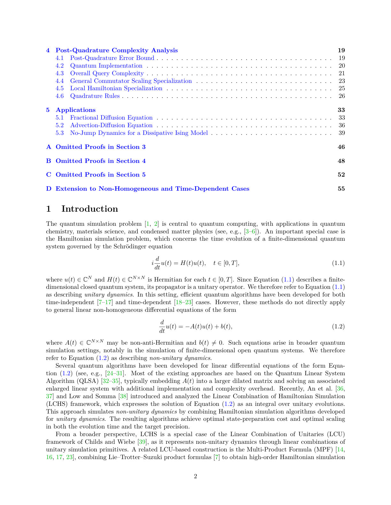
<figcaption class="paper-figure-caption"><b>Fig 1.</b> Low-resolution page preview, page 2</figcaption>
</figure>
<figure class="paper-figure-card">
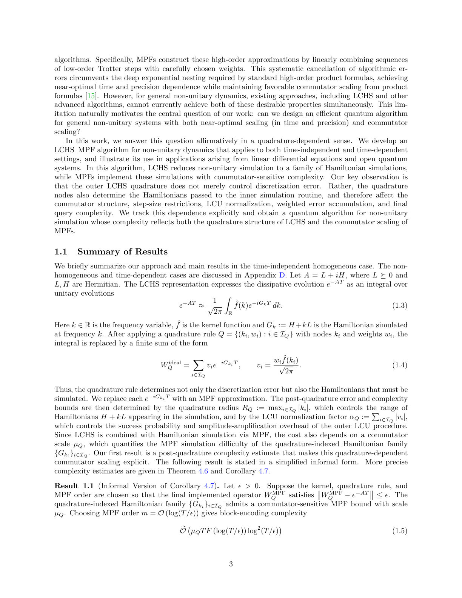
<figcaption class="paper-figure-caption"><b>Fig 2.</b> Low-resolution page preview, page 3</figcaption>
</figure>
<figure class="paper-figure-card">
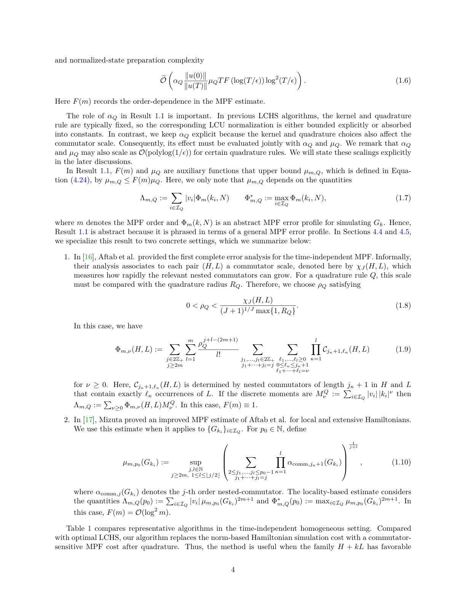
<figcaption class="paper-figure-caption"><b>Fig 3.</b> Low-resolution page preview, page 4</figcaption>
</figure>
<figure class="paper-figure-card">
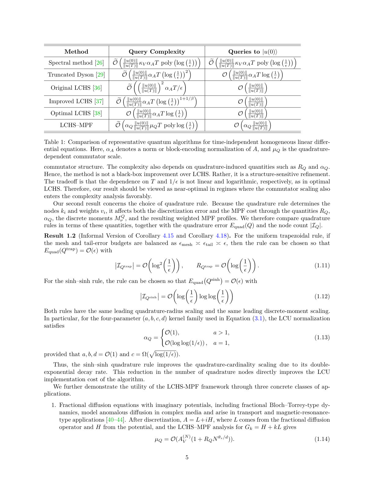
<figcaption class="paper-figure-caption"><b>Fig 4.</b> Low-resolution page preview, page 5</figcaption>
</figure>
<figure class="paper-figure-card">
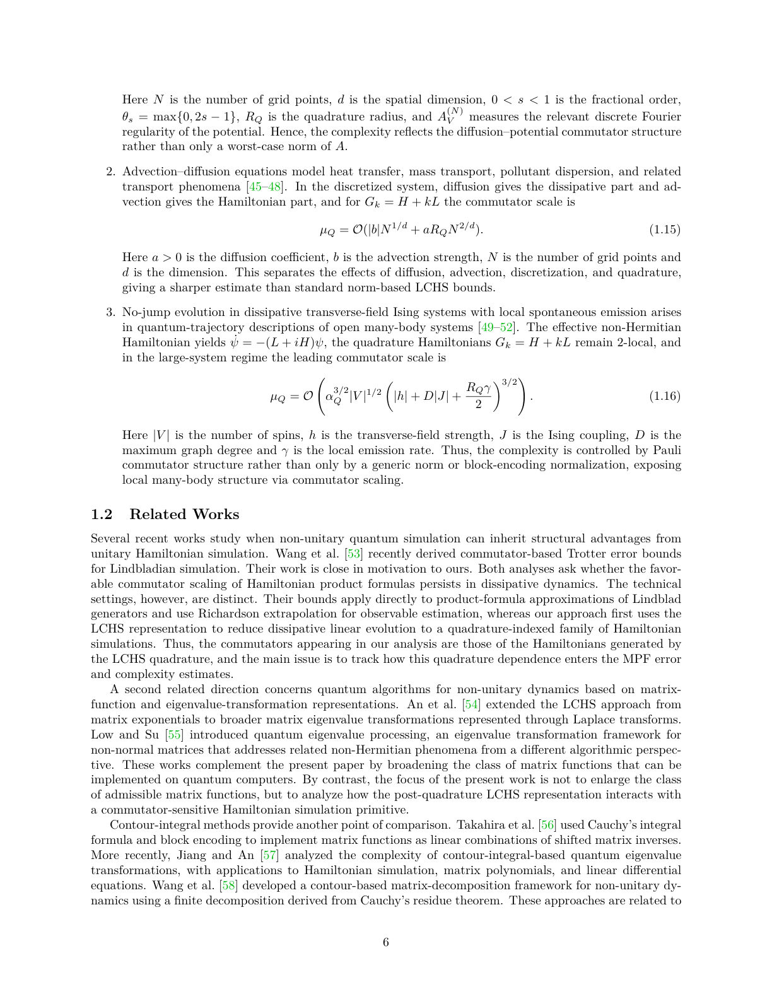
<figcaption class="paper-figure-caption"><b>Fig 5.</b> Low-resolution page preview, page 6</figcaption>
</figure>
</div>

<p><strong>Summary.</strong> The paper presents an advanced quantum algorithm combining Linear Combination of Hamiltonian Simulation (LCHS) with Multi-Product Formulas (MPFs) to simulate non-unitary dynamics. It rigorously analyzes the total simulation error and complexity, demonstrating that incorporating commutator scaling provides tighter and more accurate resource estimates than previous norm-based methods. This is crucial for designing efficient quantum hardware implementations for open quantum systems.</p>
<p><strong>Why it may be interesting.</strong> This work provides a sophisticated theoretical framework for quantum simulation that moves beyond simple norm-based complexity estimates. By explicitly incorporating commutator scaling, it offers potentially superior algorithmic guarantees for simulating dissipative or open quantum systems relevant to AMO physics.</p>
<details>
<summary>Detailed structure</summary>
<p><strong>Main problem.</strong> Developing an efficient quantum algorithm for simulating general non-unitary dynamics while achieving near-optimal scaling in both time and precision, specifically by incorporating commutator sensitivity.</p>
<p><strong>Main result.</strong> The authors develop the LCHS-MPF framework, showing that complexity bounds explicitly reflect both quadrature structure and commutator scaling, leading to improved convergence rates over norm-based methods.</p>
<p><strong>Method.</strong> The simulation uses Linear Combination of Hamiltonian Simulation (LCHS) combined with Multi-Product Formulas (MPFs) to approximate time evolution integrals. The analysis rigorously quantifies the error based on quadrature rules and commutator structures.</p>
<p><strong>Model / system.</strong> The focus is on simulating linear differential equations, $\frac{d}{dt}u(t) = -A(t)u(t) + b(t)$, which models open quantum systems dynamics. The underlying mathematical structure involves approximating integrals over unitary operators using quadrature and MPFs.</p>
<p><strong>Key observables.</strong> Overall simulation error ($\|u(T) - u_{	ext{MPF}Q,P}(T)\|$), block-encoding complexity, and the amplitude amplification factor $\chi_{Q,P}$.</p>
<p><strong>Important parameters / regimes.</strong> Quadrature radius ($R_Q$), LCU normalization factor ($\alpha_Q$), commutator scale ($\mu_Q$), total simulation time ($T$), and target accuracy ($\epsilon$).</p>
<p><strong>Assumptions / limitations.</strong> The analysis is highly dependent on the choice of quadrature rule, the existence of favorable commutator scaling in the Hamiltonian family, and the ability to implement controlled second-order product-formula queries.</p>
<p><strong>Figures summary.</strong> Not specified; the notes refer to tables comparing LCHS variants and equations detailing error bounds (e.g., Eq. 3.5, D.39).</p>
<p><strong>Paper structure.</strong> The paper builds from general simulation frameworks (LCU/MPF) to specific techniques for non-unitary dynamics (LCHS). It systematically analyzes the total error by decomposing it into quadrature errors ($E^{	ext{quad}}$), time discretization errors ($E_{	ext{time}}$), and inner MPF approximation errors, culminating in complexity bounds.</p>
</details>
<details>
<summary>Abstract</summary>
<p>The Linear Combination of Hamiltonian Simulation (LCHS) framework simulates dissipative linear dynamics by representing time evolution as an integral over unitary operators, which is discretized by quadrature and implemented via Hamiltonian simulation. While existing analyses achieve near-optimal scaling in time and precision using norm-based quantities of the dissipative generator, we show that implementing the Hamiltonian simulation steps with Multi-Product Formulas (MPFs) yields commutator-sensitive error and complexity bounds. We demonstrate that the quadrature rule affects not only discretization error but also commutator structure and query complexity. This dependence is quantified through post-quadrature analysis for abstract MPF error profiles and for general time-independent and local Hamiltonians using known commutator-sensitive MPF error estimates. We compare uniform trapezoidal and free-scale sinh--sinh quadrature, showing improved quadrature-cardinality scaling for the latter, and illustrate the framework with applications to fractional diffusion, advection--diffusion, and open quantum systems.</p>
</details>
<p><sub><a href="#top">↑ back to top</a></sub></p>

<p><a id="paper-2606.11731"></a></p>
<h3 id="quantum-correlation-hierarchy-and-teleportation-in-dephased-hydrogen-hyperfine-system"><a href="http://arxiv.org/abs/2606.11731v1">Quantum Correlation Hierarchy and Teleportation in Dephased Hydrogen Hyperfine System</a></h3>
<p><strong>Authors:</strong> Geerthana Thiyagarajan, R. Muthuganesan<br>
<strong>Type:</strong> theory · <strong>Category:</strong> quantum information and computing · <strong>PDF:</strong> <a href="https://arxiv.org/pdf/2606.11731v1">https://arxiv.org/pdf/2606.11731v1</a><br>
<strong>Analysis basis:</strong> full PDF text, analyzed in chunks
<strong>Topic relevance:</strong> 🔥 <code>entanglement &amp; information structure</code> <strong>4/5</strong> · <code>correlated / nonlocal dissipation</code> <strong>3/5</strong> · <code>methods for driven-dissipative</code> <strong>3/5</strong> · <code>driven-dissipative phase transition</code> <strong>2/5</strong> · <code>non-equilibrium dynamics</code> <strong>2/5</strong> · <code>Keldysh / 2PI / non-Gaussian methods</code> <strong>1/5</strong> · <code>analog quantum simulation</code> <strong>1/5</strong> · <code>exotic spin models in light-matter</code> <strong>1/5</strong> · <code>non-equilibrium universality</code> <strong>1/5</strong> · <code>spintronics-quantum-optics interface</code> <strong>1/5</strong></p>
<div class="figure-strip-hint">↔ Scroll figures horizontally</div>
<div class="paper-figures-scroll">
<figure class="paper-figure-card">
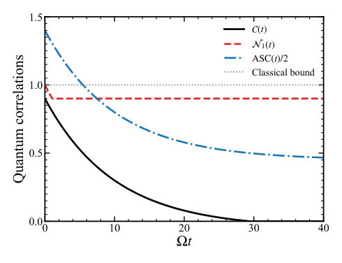
<figcaption class="paper-figure-caption"><b>Fig 1.</b> FIG. 1. Time evolution of concurrence C, Trace MIN N1, and ASC/2 for b1 = 1, b2 = −0.9, b3 = 0.9 at κ = 0.05 α. The ordering C ≤N1 ≤ASC is preserved throughout.</figcaption>
</figure>
<figure class="paper-figure-card">
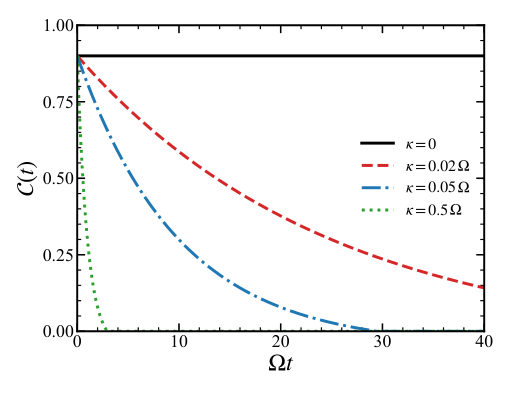
<figcaption class="paper-figure-caption"><b>Fig 2.</b> FIG. 2. Concurrence for b1 = 1, b2 = −0.9, b3 = 0.9 at κ = 0, 0.02α, 0.05α, and0.5α. Increasing κ accelerates entan- glement decay.</figcaption>
</figure>
<figure class="paper-figure-card">

<figcaption class="paper-figure-caption"><b>Fig 3.</b> Figure 3 shows Trace MIN for the same parameteric space. After a crossover time</figcaption>
</figure>
<figure class="paper-figure-card">
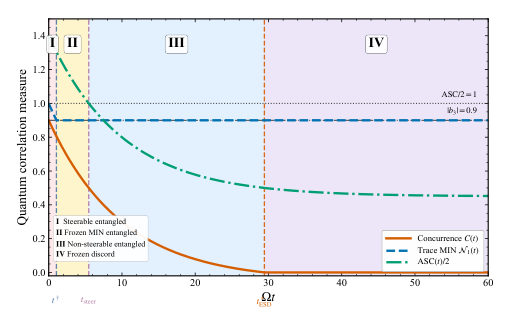
<figcaption class="paper-figure-caption"><b>Fig 4.</b> FIG. 5. Dynamical regimes of quantum correlations for b1 = 1, b2 = −0.9, and b3 = 0.9 under dephasing. The ver- tical dashed lines mark the steering-loss time tsteer and the entanglement-sudden-death time tESD, separating four dis- tinct dynamical regimes.</figcaption>
</figure>
<figure class="paper-figure-card">
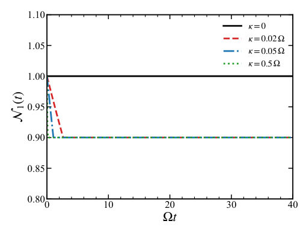
<figcaption class="paper-figure-caption"><b>Fig 5.</b> FIG. 3. Trace MIN N1 for different κ. All curves saturate to |b3|, independent of the dephasing rate.</figcaption>
</figure>
</div>

<p><strong>Summary.</strong> The paper analyzes how various measures of quantum correlation degrade in a dephasing environment using the hydrogen hyperfine spin system. It establishes that while entanglement decays rapidly (sudden death), other discord-like measures persist longer due to population correlations. Crucially, it shows that for standard teleportation protocols, only the initial presence of entanglement dictates whether an advantage over classical communication is possible.</p>
<p><strong>Why it may be interesting.</strong> This work provides a detailed theoretical roadmap for experimentally verifying the persistence of quantum correlations beyond entanglement decay, which is crucial for understanding resource theories in noisy environments.</p>
<details>
<summary>Detailed structure</summary>
<p><strong>Main problem.</strong> The study investigates how different measures of quantum correlation (entanglement, discord-like measures, steering coherence) decay relative to each other when a two-qubit system undergoes local dephasing noise.</p>
<p><strong>Main result.</strong> A strict hierarchy $C(t) \le N_1(t) \le 	ext{ASC}(t)$ is established, showing that entanglement ($C$) decays fastest (sudden death), while discord-like measures ($N_1$ and ASC) persist longer due to population correlations.</p>
<p><strong>Method.</strong> The authors derived the exact time-dependent density matrix for an X-state family under a Lindblad master equation describing local dephasing, allowing for closed-form computation of correlation functions.</p>
<p><strong>Model / system.</strong> The system is the hydrogen hyperfine spin pair (electron and proton), modeled as an open two-qubit system governed by an isotropic hyperfine Hamiltonian and subject to Markovian phase noise (local dephasing).</p>
<p><strong>Key observables.</strong> Concurrence ($C$), Trace MIN–N1 ($ ext{Trace MIN-}N_1$), Average Steering Coherence (ASC), and Quantum Teleportation Fidelity ($F_A$).</p>
<p><strong>Important parameters / regimes.</strong> Dephasing strength ($\kappa$), time ($t$), initial state parameters ($b_1, b_2, b_3$, or purity $\epsilon$)</p>
<p><strong>Assumptions / limitations.</strong> The analysis is restricted to the X-state family of two-qubit states and assumes local dephasing noise (Markovian process).</p>
<p><strong>Figures summary.</strong> Figures illustrate the time evolution confirming the $C \le N_1 \le 	ext{ASC}$ ordering, showing entanglement sudden death ($t^*$) followed by the freezing/saturation of $N_1$ and ASC at non-zero values.</p>
<p><strong>Paper structure.</strong> The paper systematically derives correlation measures for the X-state family under dephasing, establishes their strict hierarchy, analyzes the operational equivalence between teleportation advantage and entanglement survival ($F_A > 2/3 \iff C > 0$), and concludes by proposing a measurement scheme based on Pauli correlators.</p>
</details>
<details>
<summary>Abstract</summary>
<p>We study the dynamics of quantum correlations in the hydrogen hyperfine spin system subject to Markovian phase noise. Treating the electron and proton spin degrees of freedom as an open two-qubit system governed by an isotropic hyperfine Hamiltonian and local dephasing, we obtain the exact time-dependent density matrix and derive analytical expressions for the full X-state family. We compute concurrence($C$), trace-distance measurement-induced nonlocality (Trace MIN--$\mathcal{N}_1$), and average steering coherence (ASC) in closed form and establish their strict ordering $ C(t)\leq \mathcal{N}_1(t)\leq \mathrm{ASC}(t) $ at all times. Entanglement is identified as the most fragile resource, undergoing sudden death at a finite time. Trace MIN exhibits dephasing-immune freezing for states with nonzero population imbalance, while ASC is the most robust quantity, persisting longest in every scenario studied.We additionally demonstrate that the dephased thermal hyperfine state serves as a resource for quantum teleportation, deriving a closed-form expression for the average fidelity and establishing that the teleportation advantage window coincides exactly with the entanglement survival interval, $\mathcal{F}_A > 2/3 \Longleftrightarrow \mathcal{C} > 0$, for the full X-state family with maximally mixed marginals. We identify four distinct dynamical regimes and map all three correlation measures onto directly measurable Pauli spin correlators, enabling experimental reconstruction of the full hierarchy without full state tomography.</p>
</details>
<p><sub><a href="#top">↑ back to top</a></sub></p>

<p><a id="paper-2606.12338"></a></p>
<h3 id="entanglement-generation-between-field-modes-mediated-by-a-fluctuating-conducting-wall"><a href="http://arxiv.org/abs/2606.12338v1">Entanglement generation between field modes mediated by a fluctuating conducting wall</a></h3>
<p><strong>Authors:</strong> Luca Giovanni Cammarata, Tommaso Fazio, Roberto Passante, Lucia Rizzuto<br>
<strong>Type:</strong> theory · <strong>Category:</strong> other · <strong>PDF:</strong> <a href="https://arxiv.org/pdf/2606.12338v1">https://arxiv.org/pdf/2606.12338v1</a><br>
<strong>Analysis basis:</strong> full PDF text, analyzed in chunks
<strong>Topic relevance:</strong> 🔥 <code>analog quantum simulation</code> <strong>4/5</strong> · <code>correlated cavity matter</code> <strong>3/5</strong> · <code>entanglement &amp; information structure</code> <strong>3/5</strong> · <code>correlated / nonlocal dissipation</code> <strong>2/5</strong> · <code>Keldysh / 2PI / non-Gaussian methods</code> <strong>1/5</strong> · <code>Tavis-Cummings &amp; cavity-many-emitter</code> <strong>1/5</strong> · <code>driven-dissipative phase transition</code> <strong>1/5</strong> · <code>methods for driven-dissipative</code> <strong>1/5</strong> · <code>non-equilibrium dynamics</code> <strong>1/5</strong></p>
<div class="figure-strip-hint">↔ Scroll figures horizontally</div>
<div class="paper-figures-scroll">
<figure class="paper-figure-card">
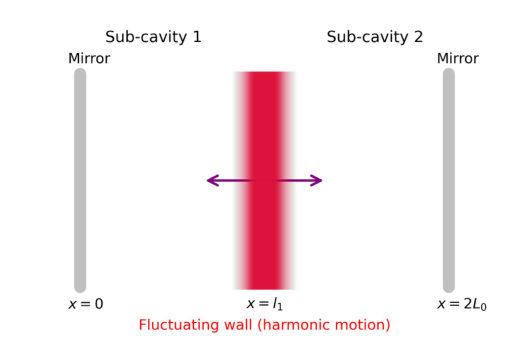
<figcaption class="paper-figure-caption"><b>Fig 1.</b> FIG. 1: Pictorial representation of a cavity divided into two sub-cavities by a fluctuating conducting wall with equilibrium position between the two external walls.</figcaption>
</figure>
<figure class="paper-figure-card">
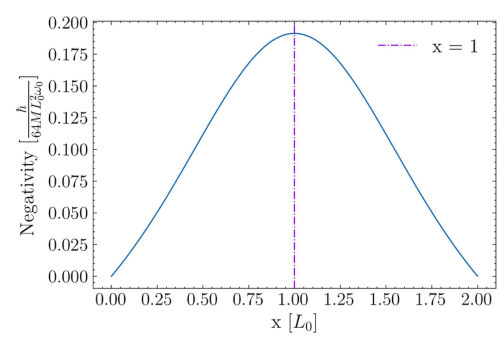
<figcaption class="paper-figure-caption"><b>Fig 2.</b> FIG. 2: The negativity (18) as a function of x, the wall’s equilibrium position in units of L0.</figcaption>
</figure>
<figure class="paper-figure-card">
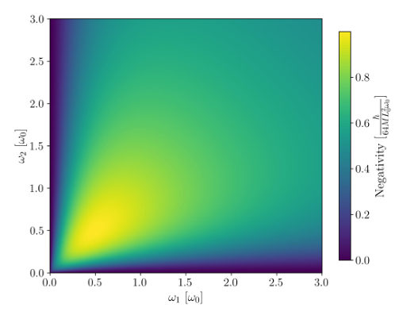
<figcaption class="paper-figure-caption"><b>Fig 3.</b> FIG. 3: The negativity (18) as a function of ω1 ≡ωk and ω2 ≡ωj, in units of ω0, for the symmetric configuration l1 = l2 = L0.</figcaption>
</figure>
<figure class="paper-figure-card">
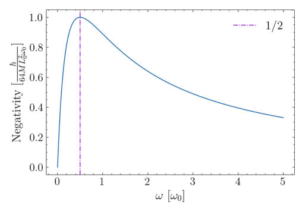
<figcaption class="paper-figure-caption"><b>Fig 4.</b> FIG. 4: Negativity in Eq. (19) as a function of ω, in units of ω0, for the symmetric configuration l1 = l2 = L0.</figcaption>
</figure>
<figure class="paper-figure-card">
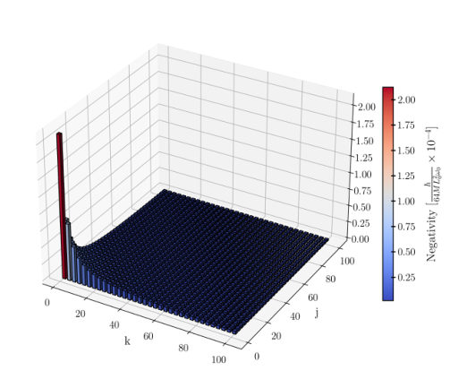
<figcaption class="paper-figure-caption"><b>Fig 5.</b> FIG. 5: 3D histogram of the negativity in Eq. (18), quantifying the entanglement between pairs of modes k and j, in terms of the dimensionless parameter ℏ/(64ML2 0ω0).</figcaption>
</figure>
</div>

<p><strong>Summary.</strong> The paper models two field cavities separated by a movable, quantum mechanically fluctuating wall. By treating the system's dynamics using perturbation theory and calculating entanglement via negativity, the authors demonstrate that vacuum fluctuations of the wall generate significant entanglement between the fields in the two separate cavities. This highlights how mechanical degrees of freedom can mediate non-local quantum correlations.</p>
<p><strong>Why it may be interesting.</strong> This work directly addresses quantum light-matter interaction in a cavity setting (cavity QED analogue), showing how mechanical fluctuations can act as an effective mediator for generating non-classical correlations between distant quantum systems.</p>
<details>
<summary>Detailed structure</summary>
<p><strong>Main problem.</strong> The study investigates how quantum entanglement can be generated between field modes confined in two separate sub-cavities when these cavities are separated by a movable, fluctuating conducting wall.</p>
<p><strong>Main result.</strong> Quantum position fluctuations of the movable wall generate measurable entanglement between the field modes in opposite sub-cavities, an effect absent if the wall were fixed.</p>
<p><strong>Method.</strong> The analysis employs second-order perturbation theory to find the interacting ground state and calculates entanglement using the negativity measure on the reduced density operator by tracing out the wall's degrees of freedom.</p>
<p><strong>Model / system.</strong> The system consists of two massless 1D scalar fields confined in sub-cavities separated by a movable conducting plate. The wall's mechanical motion is quantized via a harmonic potential, leading to an effective field-wall interaction Hamiltonian.</p>
<p><strong>Key observables.</strong> Negativity (N), which quantifies the entanglement between the two field modes; total multi-mode negativity.</p>
<p><strong>Important parameters / regimes.</strong> Mass ($M$) and oscillation frequency ($\omega_0$) of the movable wall, sub-cavity lengths ($l_1, l_2$), and the frequencies of the considered field modes ($\omega_k, \omega_j$).</p>
<p><strong>Assumptions / limitations.</strong> The analysis is performed using perturbation theory up to second order in the interaction Hamiltonian; the use of negativity is necessary because the reduced state is generally mixed.</p>
<p><strong>Figures summary.</strong> Figures illustrate the dependence of entanglement (negativity) on the wall's equilibrium position, mode frequencies, and the number of modes considered, showing maximization under specific resonance conditions.</p>
<p><strong>Paper structure.</strong> The paper establishes the Hamiltonian describing the coupled system, derives the reduced density operator by tracing out the wall, calculates the negativity analytically for two modes, and then extends this analysis numerically to include multiple field modes while discussing parameter dependencies.</p>
</details>
<details>
<summary>Abstract</summary>
<p>We consider a movable conducting plate of finite mass, between two fixed ones, whose mechanical degrees of freedom are treated quantum-mechanically and bound to its equilibrium position by a harmonic potential. The movable wall is thus subjected to quantum fluctuations of its position. This creates a system of two sub-cavities separated by the movable fluctuating plate, and two massless one-dimensional scalar fields, one in each sub-cavity. This system is described by an appropriate generalization of the Law Hamiltonian. The presence of the movable wall yields an effective plate-fields interaction, as well as an effective interaction between the field modes. We obtain, at the second order in perturbation theory, the ground state of the interacting system and the reduced density operator of the fields in each sub-cavity by tracing out the wall's degrees of freedom. We calculate the entanglement between two field modes, one in each cavity, by evaluating analytically the negativity; we then evaluate numerically also the total multimode negativity. Our results show that in both cases the fields in the two sub-cavities are entangled, in contrast to the case in which the wall is fixed in space. We discuss the amount of the field entanglement present as a function of relevant physical parameters of the system such as the mass and oscillation frequency of the movable wall, its distance from the fixed walls and the frequencies of the field modes considered.</p>
</details>
<p><sub><a href="#top">↑ back to top</a></sub></p>

<p><a id="paper-2606.12190"></a></p>
<h3 id="roughening-of-active-nonlinear-interfaces-with-broken-tilt-symmetry"><a href="http://arxiv.org/abs/2606.12190v1">Roughening of active nonlinear interfaces with broken tilt symmetry</a></h3>
<p><strong>Authors:</strong> Ailén M. Cámara, Alejandro B. Kolton, José Luis Iguaín<br>
<strong>Type:</strong> theory · <strong>Category:</strong> statistical mechanics · <strong>PDF:</strong> <a href="https://arxiv.org/pdf/2606.12190v1">https://arxiv.org/pdf/2606.12190v1</a><br>
<strong>Analysis basis:</strong> full PDF text, analyzed in chunks
<strong>Topic relevance:</strong> 🔥 <code>non-equilibrium universality</code> <strong>4/5</strong> · <code>driven-dissipative phase transition</code> <strong>3/5</strong> · <code>non-equilibrium dynamics</code> <strong>3/5</strong> · <code>methods for driven-dissipative</code> <strong>2/5</strong> · <code>Frenkel-Kontorova</code> <strong>1/5</strong> · <code>Keldysh / 2PI / non-Gaussian methods</code> <strong>1/5</strong> · <code>analog quantum simulation</code> <strong>1/5</strong> · <code>correlated / nonlocal dissipation</code> <strong>1/5</strong> · <code>entanglement &amp; information structure</code> <strong>1/5</strong></p>
<div class="figure-strip-hint">↔ Scroll figures horizontally</div>
<div class="paper-figures-scroll">
<figure class="paper-figure-card">
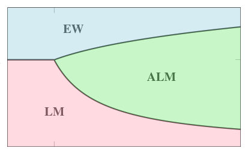
<figcaption class="paper-figure-caption"><b>Fig 1.</b> Figure 1. Crossover diagram for the non-linear active inter- face described by Eq. (1), mapped as a function of the normal- ized length scale ˜ℓ= ℓ/√c2τ and the dimensionless coupling constant Γ2n = c2nT/(c(3n−1)/2 2 √τ). Here, T denotes the ac- tive noise strength, τ is the temporal correlation time, c2 is the linear elastic constant, and c2n (with n &gt; 1) represents the degree of non-Hookean elasticity. The analytical bound- aries mapping the transitions between the EW, LM, and ALM roughening regimes are defined by Eqs. (8)–(10).</figcaption>
</figure>
<figure class="paper-figure-card">
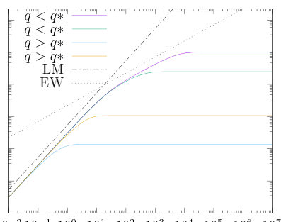
<figcaption class="paper-figure-caption"><b>Fig 2.</b> Figure 2. Analytical predictions for the Larkin (LM) to Edwards-Wilkinson (EW) crossover during the relaxation of a flat initial interface, for τ = 10. (a) S(q, t) vs q at dif- ferent times. The dotted line shows EW scaling ∼q−2 and the dashed-dotted the LM scaling S(q, t) ∼q−(1+2ζLM) = q−4. (b) S(q, t) vs t for q &gt; q∗and q &lt; q∗, with q∗</figcaption>
</figure>
<figure class="paper-figure-card">
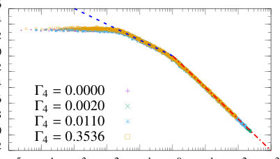
<figcaption class="paper-figure-caption"><b>Fig 3.</b> Figure 3. Γ4 &lt; 2. Top: Structure factors for several set of parameters (in the key). Bottom: The same data collapsed onto a master curve. The line represents the analytical solu- tion g&lt;(k, Γ4)/k2. Dashed (blue) part and dash-dotted (red) parts correspond EW and LM regimes, respectively.</figcaption>
</figure>
<figure class="paper-figure-card">
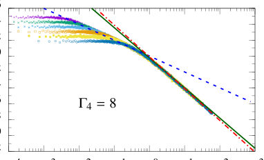
<figcaption class="paper-figure-caption"><b>Fig 4.</b> Figure 4. Structure factors for Γ4 = 8. The plots correspond to c2 = 1, c4 = 8 and several pairs of T (in the key) and τ, which satisfy T/√τ = 1. Top panel: raw data. Bottom panel: rescaled data collapsing on an universal function. The line represents the analytical solution g&gt;(k, Γ4)/k2. Dashed (blue), solid (dark-green) and dash-dotted (red) parts corre- spond to EW. ALM and LM regimes, respectively</figcaption>
</figure>
<figure class="paper-figure-card">
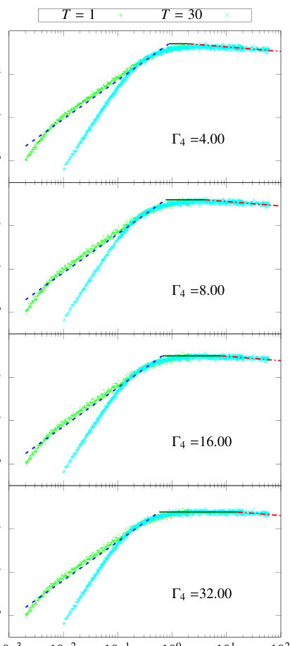
<figcaption class="paper-figure-caption"><b>Fig 5.</b> Figure 5. Structure factor for Γ4 &gt; 2. The plots correspond to four different Γ4 (in the key) and pairs of T (in the key) and τ, which satisfy T/√τ = 1. Data points are the results of numerical simulations and the lines represent the analytical solutions: dashed (blue), solid (dark-green) and dash-dotted (red) parts belong to EW. ALM and LM regimes, respectively. In all panels the structure factor is presented in a rotated manner (see eq. (73)) to better appreciate the widening of the ALM zone with increasing Γ4.</figcaption>
</figure>
</div>

<p><strong>Summary.</strong> This work theoretically analyzes how nonlinear interfaces roughen when subjected to colored active noise that breaks symmetry. It successfully derives a crossover diagram showing the transition between three distinct physical regimes: Larkin, anharmonic Larkin, and Edwards–Wilkinson scaling. The findings provide a unified framework for understanding finite-size effects in such non-equilibrium systems.</p>
<p><strong>Why it may be interesting.</strong> While focused on classical interface dynamics, the concept of universality classes, non-equilibrium steady states, and crossovers driven by noise correlations are fundamental concepts applicable to many open quantum systems and non-equilibrium statistical mechanics problems in AMO physics.</p>
<details>
<summary>Detailed structure</summary>
<p><strong>Main problem.</strong> The study focuses on characterizing the roughening dynamics of active nonlinear interfaces driven by temporally correlated noise that breaks statistical tilt symmetry.</p>
<p><strong>Main result.</strong> The system exhibits a unified description across three distinct self-affine scaling regimes: Larkin (LM), anharmonic Larkin (ALM), and Edwards–Wilkinson (EW).</p>
<p><strong>Method.</strong> The analysis employs scaling arguments, the self-consistent Hartree approximation, and comparison with known asymptotic limits.</p>
<p><strong>Model / system.</strong> The model describes an overdamped interface height h(x, t) governed by a nonlinear elastic energy functional and driven by an Ornstein–Uhlenbeck colored noise process. The dynamics are captured by a nonlinear partial differential equation.</p>
<p><strong>Key observables.</strong> Structure factor $\langle|h_q|^2
angle = S(q)$, roughness exponent ($\zeta$), and dynamical exponent ($z$).</p>
<p><strong>Important parameters / regimes.</strong> The crossover diagram depends on the normalized length scale $  ilde{\ell}$ and a dimensionless coupling constant $\Gamma_{2n}$, which controls the transition between regimes.</p>
<p><strong>Assumptions / limitations.</strong> The analysis relies on approximations like scaling arguments and the Hartree approximation to derive analytical boundaries for transitions between universality classes.</p>
<p><strong>Figures summary.</strong> Figures illustrate the crossover diagram mapping the EW, LM, and ALM regimes using dimensionless parameters, with data collapsing onto universal master curves in numerical simulations.</p>
<p><strong>Paper structure.</strong> The paper develops the governing equation, analyzes the linear limit (LM to EW crossover), extends the analysis to include nonlinearity via the Hartree approximation, and finally presents a unified crossover diagram showing the interplay between all three regimes.</p>
</details>
<details>
<summary>Abstract</summary>
<p>We study the roughening of an interface with nonlinear elasticity driven by temporally correlated noise, which breaks statistical tilt symmetry. Using scaling arguments and a self-consistent Hartree approximation, we derive the crossover diagram and the steady-state structure factor. We identify three scaling regimes associated with the Larkin, anharmonic Larkin, and Edwards--Wilkinson universality classes, and obtain the crossover lengths separating them. Numerical simulations of large systems confirm the analytical predictions over the full parameter range. Our results provide a unified description of finite-size and crossover effects in a minimal nonlinear-elastic Ornstein--Uhlenbeck active interface.</p>
</details>
<p><sub><a href="#top">↑ back to top</a></sub></p>

<p><a id="paper-2606.12313"></a></p>
<h3 id="quantum-repeater-segment-with-free-space-coupled-co-trapped-ions-using-telecom-photon-interference"><a href="http://arxiv.org/abs/2606.12313v1">Quantum repeater segment with free-space coupled co-trapped ions using telecom photon interference</a></h3>
<p><strong>Authors:</strong> Max Bergerhoff, Pascal Baumgart, Christian Haen, Jonas Meiers, Tobias Bauer, Jonas Haferkamp, Christoph Becher, Jürgen Eschner<br>
<strong>Type:</strong> experiment · <strong>Category:</strong> quantum information and computing · <strong>PDF:</strong> <a href="https://arxiv.org/pdf/2606.12313v1">https://arxiv.org/pdf/2606.12313v1</a><br>
<strong>Analysis basis:</strong> full PDF text, analyzed in chunks
<strong>Topic relevance:</strong> 🔥 <code>QC/QI experiment</code> <strong>4/5</strong> · <code>interference shaping light</code> <strong>3/5</strong> · <code>quantum optics experiment</code> <strong>3/5</strong> · <code>entanglement &amp; information structure</code> <strong>2/5</strong> · <code>quantum measurements</code> <strong>2/5</strong> · <code>analog quantum simulation</code> <strong>1/5</strong> · <code>non-equilibrium dynamics</code> <strong>1/5</strong></p>
<div class="figure-strip-hint">↔ Scroll figures horizontally</div>
<div class="paper-figures-scroll">
<figure class="paper-figure-card">
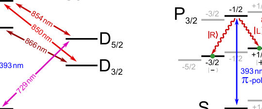
<figcaption class="paper-figure-caption"><b>Fig 1.</b> FIG. 1. (a) Schematic of the experimental setup, comprising two co-trapped ions in a Paul trap as quantum memories, individual single-photon collection (green), two QFCs (orange), and Bell state analyzer (violet). (b) Level scheme, transitions, and wavelengths of the 40Ca+ ion. (c) Zeeman sub-levels for generation of atom-photon entanglement, showing excitation (blue) and emission paths (red). The relevant levels for generation of the target state (Equation 2) are shown in black. Excitation of the initial state S1/2, −1/2 to P1/2, −1/2 with π-polarized 393-nm light triggers decay to a superposition of |−⟩= D5/2, −3/2</figcaption>
</figure>
<figure class="paper-figure-card">
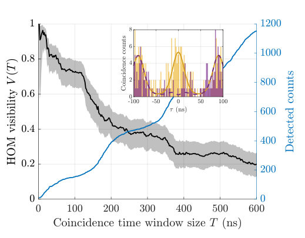
<figcaption class="paper-figure-caption"><b>Fig 2.</b> FIG. 2. HOM visibility V (T) plotted as a function of the co- incidence window size T, changed in steps of 1 ns. Measured data points are shown in black, with their associated uncer- tainties represented by shaded regions. In blue, the number of contributing counts is shown. The inset displays the his- tograms of coincidence detections as a function of the detec- tion time difference τ for projections onto orthogonal (yellow bars) and parallel (violet bars) polarizations, evaluated with a bin size of 2 ns. As a guide to the eye, the lines of the cor- responding colors show simulations obtained with the model of [40] and using the experimentally determined parameters.</figcaption>
</figure>
<figure class="paper-figure-card">
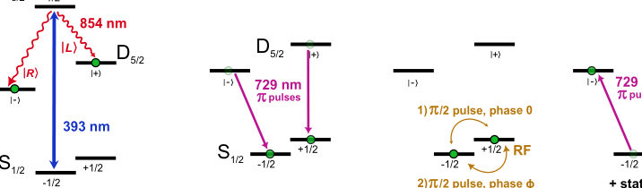
<figcaption class="paper-figure-caption"><b>Fig 3.</b> FIG. 3. Schematic of the sequence for verification of atom-atom entanglement. Generation of atom-photon entanglement. Population transfer from D5/2 to S1/2. Basis rotation by the use of two π/2 RF pulses. Population transfer back from S1/2 to D5/2 followed by state readout.</figcaption>
</figure>
<figure class="paper-figure-card">
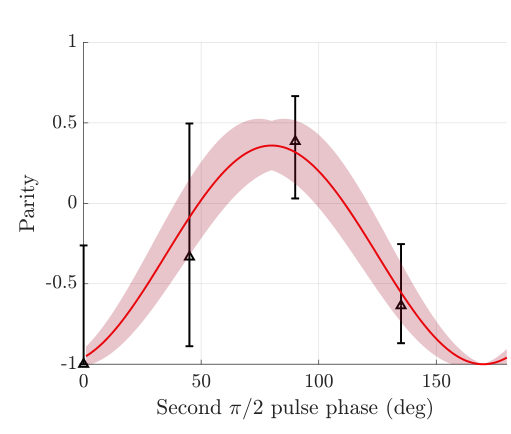
<figcaption class="paper-figure-caption"><b>Fig 4.</b> FIG. 4. Parity as a function of the phase of second π/2 pulse. Black points show the measured data at 0◦, 45◦, 90◦, 135◦; the red line is a sinusoidal fit with its uncertainty indicated by the red shading.</figcaption>
</figure>
<figure class="paper-figure-card">
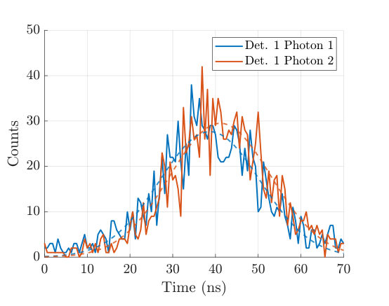
<figcaption class="paper-figure-caption"><b>Fig 5.</b> FIG. 5. One of the fifteen peaks in the single-photon wave packets from both ions for one selected detector to measure the time difference at the FBS with the fit as dashed line. Photon 1 (2) refers to the photon emitted by Ion 1 (2).</figcaption>
</figure>
</div>

<p><strong>Summary.</strong> The research demonstrates the feasibility of building a quantum repeater segment using co-trapped $^{40}	ext{Ca}^+$ ions. By converting emitted photons to the telecom band and performing interference over long optical fibers, they successfully generated entangled Bell states with high fidelity. This work establishes trapped ions as a promising hardware platform for scalable quantum networks.</p>
<p><strong>Why it may be interesting.</strong> This work directly addresses a core challenge in quantum networking—the distribution of entanglement over lossy channels—by demonstrating a robust hardware platform (trapped ions) compatible with existing telecom infrastructure.</p>
<details>
<summary>Detailed structure</summary>
<p><strong>Main problem.</strong> The primary goal is to implement a quantum repeater segment capable of generating buffered entanglement between distant quantum memories, thereby enabling long-distance quantum communication.</p>
<p><strong>Main result.</strong> The authors successfully generated an entangled Bell state with fidelity $\ge 68(8)\%$ using co-trapped $^{40}	ext{Ca}^+$ ions and demonstrated the feasibility of this platform for quantum networking.</p>
<p><strong>Method.</strong> Entanglement is established by generating photons from two trapped ions, converting these photons to the telecom C band, transmitting them over optical fiber, and performing a photonic Bell State Measurement (BSM).</p>
<p><strong>Model / system.</strong> The physical system utilizes co-trapped $^{40}	ext{Ca}^+$ ions in a Paul trap. The process involves Raman photon generation, quantum frequency conversion (QFC) to 1550 nm, and subsequent entanglement swapping via photonic interference.</p>
<p><strong>Key observables.</strong> Entanglement fidelity ($\ge 68(8)\%$), Hong–Ou–Mandel (HOM) visibility ($>0.7$ for $T < 120 	ext{ ns}$), CHSH parameters ($2.42-2.49$), and parity oscillation amplitude ($A = 1.36(15)$).</p>
<p><strong>Important parameters / regimes.</strong> Fiber length of $440 	ext{ m}$, coincidence time windows $< 120 	ext{ ns}$, and the telecom C band ($\sim 1550 	ext{ nm}$).</p>
<p><strong>Assumptions / limitations.</strong> The high fidelity relies on maintaining short coincidence windows for maximum HOM visibility, and future work requires integrating additional trapping nodes or cavities.</p>
<p><strong>Figures summary.</strong> Figures illustrate the setup schematic (Paul trap, QFCs, BSM), show HOM visibility vs. time window size $T$, and plot parity oscillations versus phase to verify entanglement.</p>
<p><strong>Paper structure.</strong> The paper details the experimental realization of the quantum repeater segment protocol, covering photon generation, frequency conversion, long-distance transmission, Bell state measurement, and subsequent characterization using multiple diagnostic tools like HOM interference and parity measurements.</p>
</details>
<details>
<summary>Abstract</summary>
<p>A quantum repeater segment is a basic building block of a quantum repeater, generating buffered entanglement of quantum memories to connect quantum repeater cells. It also enables the connection between quantum computers. In the implementation we present here, photons emitted from two co-trapped free-space coupled $^{40}$Ca$^+$ ions are converted to the telecom-C band and interfered after transmission over 440$\,$m of optical fiber (220$\,$m per arm), where a photonic Bell measurement is performed to create entanglement between the memories. With this scheme we generate an entangled $\left|Ψ^+\right\rangle$ Bell state with $\ge 68(8)\,$% fidelity, highlighting trapped $^{40}$Ca$^+$ ions as a promising quantum repeater hardware platform.</p>
</details>
<p><sub><a href="#top">↑ back to top</a></sub></p>

<p><a id="paper-2606.12307"></a></p>
<h3 id="super-link-fragility-in-asymmetric-w-class-states-under-quantum-noise"><a href="http://arxiv.org/abs/2606.12307v1">Super-Link Fragility in Asymmetric W-Class States under Quantum Noise</a></h3>
<p><strong>Authors:</strong> Sougata Bhattacharyya, Fatih Ozaydin, Sovik Roy<br>
<strong>Type:</strong> theory · <strong>Category:</strong> quantum information and computing · <strong>PDF:</strong> <a href="https://arxiv.org/pdf/2606.12307v1">https://arxiv.org/pdf/2606.12307v1</a><br>
<strong>Analysis basis:</strong> full PDF text, analyzed in chunks
<strong>Topic relevance:</strong> 🔥 <code>entanglement &amp; information structure</code> <strong>4/5</strong> · <code>correlated / nonlocal dissipation</code> <strong>3/5</strong> · <code>methods for driven-dissipative</code> <strong>3/5</strong> · <code>driven-dissipative phase transition</code> <strong>2/5</strong> · <code>non-equilibrium dynamics</code> <strong>2/5</strong> · <code>Keldysh / 2PI / non-Gaussian methods</code> <strong>1/5</strong> · <code>non-equilibrium universality</code> <strong>1/5</strong></p>
<div class="figure-strip-hint">↔ Scroll figures horizontally</div>
<div class="paper-figures-scroll">
<figure class="paper-figure-card">
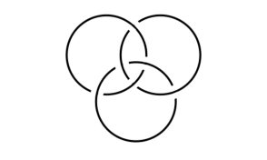
<figcaption class="paper-figure-caption"><b>Fig 1.</b> FIG. 1: Borromean Rings. Three mutually inter- locked rings in which no two rings are directly linked as a pair, yet the three together cannot be separated. This topology serves as an analogy for the Borromean mode of three-qubit entanglement: when any single qubit is measured and found in |0⟩, the residual two-qubit state of the remaining pair collapses to a fully separable prod- uct state with zero coherence (Cl1 = 0), mirroring how severing one Borromean ring causes the other two to fall entirely apart.</figcaption>
</figure>
<figure class="paper-figure-card">
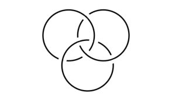
<figcaption class="paper-figure-caption"><b>Fig 2.</b> FIG. 2: 3-Hopf Link. Three rings arranged so that removing any single ring still leaves the remaining two interlinked. This topology serves as an analogy for the Hopf mode of three-qubit entanglement: when any single qubit is measured and found in |1⟩, the residual two-qubit state retains non-zero coherence (Cl1 &gt; 0) and bipartite entanglement, mirroring the persistent linkage of the re- maining two Hopf rings.</figcaption>
</figure>
<figure class="paper-figure-card">
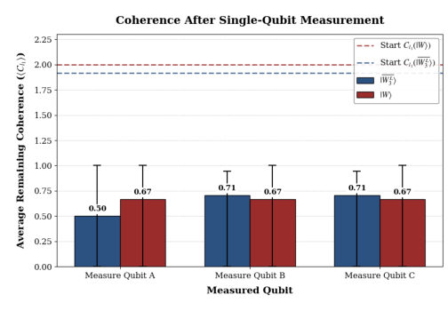
<figcaption class="paper-figure-caption"><b>Fig 3.</b> FIG. 3: l1-norm coherence of the two-qubit re- mainder after single-qubit measurement. For each measured qubit (A, B, or C), the two endpoints of the error bar mark the two possible coherence values corre- sponding to the measurement outcomes |0⟩and |1⟩; the bar height marks the probability-weighted average (ex- pectation value) of the residual coherence over the two possible measurement outcomes, and represents the ex- pected coherence remaining after a random single-qubit measurement. Dashed horizontal lines mark the initial coherence of each three-qubit state before any measure- ment: Cinit l1 ≈1.914 for |W L 3 ⟩(blue) and Cinit l1 = 2 for |W⟩ (red). For the symmetric |W⟩state (red...</figcaption>
</figure>
<figure class="paper-figure-card">
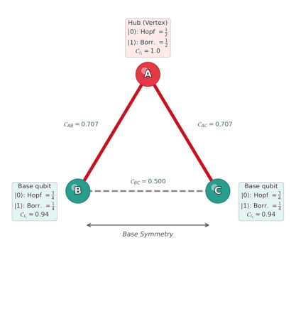
<figcaption class="paper-figure-caption"><b>Fig 4.</b> FIG. 5: Isosceles entanglement-network geom- etry of the asymmetric |W L 3 ⟩state. The vertex qubit A (top) acts as a balanced switch: it triggers the Hopf mode with probability 1</figcaption>
</figure>
<figure class="paper-figure-card">
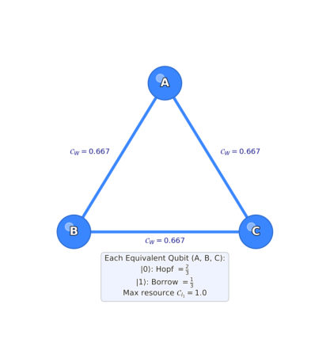
<figcaption class="paper-figure-caption"><b>Fig 5.</b> FIG. 4: Equilateral entanglement-network ge- ometry of the symmetric |W⟩state. Each vertex represents a qubit (A, B, C) and each edge represents a bipartite entanglement link. Because the single excita- tion is distributed uniformly, all three qubits play struc- turally identical roles. Every qubit acts as an unbiased probabilistic switch, triggering the Hopf mode (residual coherence Cl1 = 1.0) with probability 2 3 and the Bor- romean mode (residual separability, Cl1 = 0) with prob- ability 1 3. Consequently, tracing out any single qubit yields the same reduced density matrix, and all three bipartite concurrences are equal: CW = 2</figcaption>
</figure>
</div>

<p><strong>Summary.</strong> This paper analyzes the robustness of entanglement in asymmetric three-qubit W-states compared to symmetric ones when exposed to different types of quantum noise. It demonstrates that initial structural advantages, such as a strong 'super-link,' can be fragile and even reverse under specific decoherence channels like amplitude damping. The findings emphasize that entanglement resilience depends on the interplay between network geometry, excitation sector, and noise symmetry.</p>
<p><strong>Why it may be interesting.</strong> This work provides crucial insights into how structural properties derived from ideal quantum states break down under realistic, non-Markovian noise environments, which is vital for designing robust quantum communication protocols.</p>
<details>
<summary>Detailed structure</summary>
<p><strong>Main problem.</strong> The study investigates how the initial structural advantages of asymmetric W-class quantum states persist or degrade when subjected to various forms of quantum noise.</p>
<p><strong>Main result.</strong> The initial entanglement hierarchy ($C_{VB} > C_W > C_{BB}$) is not guaranteed under decoherence; for instance, amplitude damping causes a reversal termed the Super-Link Fragility Effect.</p>
<p><strong>Method.</strong> The authors analytically compare bipartite concurrence dynamics between symmetric and asymmetric W states using established noise models (phase, amplitude, depolarization).</p>
<p><strong>Model / system.</strong> The system involves three-qubit entangled W-class states ($|W
angle$ vs. $|\overline{W_3^L}
angle$), whose entanglement geometry is analyzed via bipartite concurrence links (Vertex-Base and Base-Base).</p>
<p><strong>Key observables.</strong> Bipartite Concurrence ($C_{VB}, C_W, C_{BB}$), Entanglement Sudden Death (ESD) thresholds.</p>
<p><strong>Important parameters / regimes.</strong> Noise parameters ($\gamma$ for amplitude damping, $p$ for depolarization, $\alpha$ for GADC).</p>
<p><strong>Assumptions / limitations.</strong> The analysis often relies on the assumption that reduced density matrices remain X-states to simplify concurrence calculations.</p>
<p><strong>Figures summary.</strong> Figures illustrate entanglement decay under different noise channels (e.g., Fig 7 shows hierarchy reversal under amplitude damping; Fig 8 shows ESD thresholds under depolarization).</p>
<p><strong>Paper structure.</strong> The paper establishes the initial geometric advantage, then systematically analyzes the robustness of this structure across four distinct noise models: phase damping (preserves hierarchy), amplitude damping (reverses hierarchy/Super-Link Fragility), depolarization (erases asymmetry), and GADC (interpolates between limits).</p>
</details>
<details>
<summary>Abstract</summary>
<p>The asymmetric three-qubit W-class state $|\overline{W_3^L}\rangle$ defines an isosceles entanglement-network geometry, (a) two vertex-base (VB) links form stronger bipartite connections, (b) while the base-base (BB) link is weaker. This suggests that concentrating entanglement into a super-link may be advantageous for quantum-network tasks. Here, we show that this intuition is incomplete. We analytically compare the bipartite concurrence dynamics of the symmetric |W&gt; state and the asymmetric $|\overline{W_3^L}\rangle$ state, which differ both in entanglement-network geometry and excitation sector under standard noise models. In the absence of noise, the concurrence hierarchy is C_{VB} &gt; C_W &gt; C_{BB}$. Under phase damping, this hierarchy is preserved for all noise strengths and no entanglement sudden death occurs. Under amplitude damping, however, the hierarchy is reordered. The symmetric |W&gt; state becomes the most robust, while the base-base concurrence of $|\overline{W_3^L}\rangle$ vanishes at the finite threshold of parameter $γ$. We term this reordering as the \textit{Super-Link Fragility Effect}. The same structural asymmetry that produces a stronger vertex-base link also makes it more vulnerable to energy dissipation when coupled with multi-excitation amplitudes. Under depolarization, the asymmetry advantage is erased, with $C_W$ and $C_{VB}$ sharing the same sudden-death threshold for some value of the parameter p, while $C_{BB}$ disappears earlier at some other value of the parameter p. The generalized amplitude damping channel continuously connects the damping-dominated regime to the pure-excitation limit, where the initial hierarchy is restored. These results show that entanglement robustness in $W$-class resources is controlled not by initial concurrence alone, but by the joint structure of entanglement-network geometry, excitation sector, and noise symmetry.</p>
</details>
<p><sub><a href="#top">↑ back to top</a></sub></p>

<p><a id="paper-2606.11822"></a></p>
<h3 id="large-fluctuations-in-open-quantum-systems"><a href="http://arxiv.org/abs/2606.11822v1">Large Fluctuations in Open Quantum Systems</a></h3>
<p><strong>Authors:</strong> V. Yu. Mylnikov, S. O. Potashin, A. Kamenev<br>
<strong>Type:</strong> theory · <strong>Category:</strong> statistical mechanics · <strong>PDF:</strong> <a href="https://arxiv.org/pdf/2606.11822v1">https://arxiv.org/pdf/2606.11822v1</a><br>
<strong>Analysis basis:</strong> full PDF text, analyzed in chunks
<strong>Topic relevance:</strong> 🔥 <code>Keldysh / 2PI / non-Gaussian methods</code> <strong>4/5</strong> · <code>driven-dissipative phase transition</code> <strong>3/5</strong> · <code>methods for driven-dissipative</code> <strong>3/5</strong> · <code>non-equilibrium dynamics</code> <strong>2/5</strong> · <code>non-equilibrium universality</code> <strong>2/5</strong> · <code>correlated / nonlocal dissipation</code> <strong>1/5</strong></p>
<div class="figure-strip-hint">↔ Scroll figures horizontally</div>
<div class="paper-figures-scroll">
<figure class="paper-figure-card">
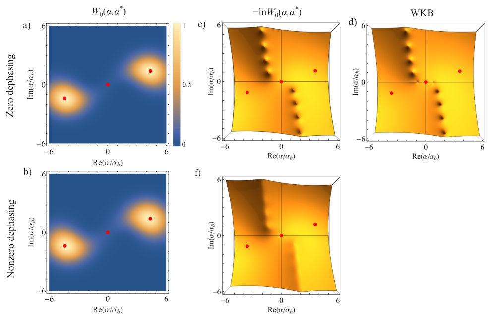
<figcaption class="paper-figure-caption"><b>Fig 1.</b> Figure 1. (a,b) Stationary Wigner function W0(α, α∗) and effective potential −ln W0(α, α∗) (c,d) vs. phase-space coordinates Re(α) and Im(α). The first row presents the case of zero dephasing (κϕ = 0), where the exact (a,c) and WKB (d) solutions present (see Eqs. (15)-(17) and Appendix A). The second row shows the nonzero dephasing case (κϕ = 0.2), which does not admit the holomorphic decomposition (15) and is calculated numerically. The system parameters are set to G = 5, ∆= 2, κ = 0.4, η = 1, U = 0.1. The red dots denote locations of the classical fixed point (10)-(11).</figcaption>
</figure>
<figure class="paper-figure-card">
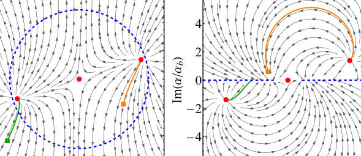
<figcaption class="paper-figure-caption"><b>Fig 2.</b> Figure 2. The real-time instanton trajectories, Eq. 37, spanning the fluctuation Riemann surface, A(α, β) = 0. The instanton paths start at classical stable points (red dots). (a-c) The subcritical drive, G &lt; | ˜∆|; (d-e) – the bistable regime, G &gt; | ˜∆|. (a), (d) Trajectories projections on the β-plane; for a given end-point β there is a unique trajectory, leading to it. (b,c) and (e,f) Trajectories projections on the two sheets of the α-plane. There are two trajectories leading to each end-point α: they both start on the minus-sheet (b), (e), one (orange) stays on this sheet, while the second (green) hits the cut (blue dashed line) and emerges on the second (plus) sheet (c), (f). The...</figcaption>
</figure>
<figure class="paper-figure-card">
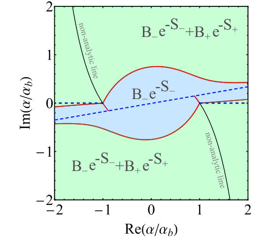
<figcaption class="paper-figure-caption"><b>Fig 3.</b> Figure 3. Stokes lines (red) on the complex α plane, as de- fined by Eq. (47). Within the inner Stokes region (blue), only the instanton with S−action contributes to the Wigner func- tion. Within the outer Stokes region (green), both instantons with S± contribute. The two actions equalize along the anti- Stokes lines (black), given by Eq. (23). The large deviation function is non-analytic along these lines. One possible choice of branch cuts of the function ϕ(±) 0 (α/αb) are depicted as blue dashed lines. The branch cut of the logarithm ln(α2) in S+ should be chosen within the inner Stokes region. The system parameters are set to G = 2, ∆= 2, κ = 0.4, η = 1, U = 0.1, κϕ = 0.</figcaption>
</figure>
<figure class="paper-figure-card">
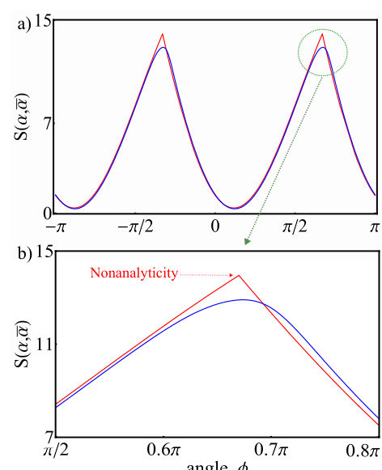
<figcaption class="paper-figure-caption"><b>Fig 4.</b> Figure 4. (a,b) The large-deviation function from the in- stanton approach (49) (red) and the exact solution (15) – (18) (blue) vs. the angle φ = arg(α/αb) for a fixed ra- dius |α| = 3.5|αb|. The system parameters are set to G = 5, ∆= 2, κ = 0.4, η = 1, U = 0.1, κϕ = 0.</figcaption>
</figure>
<figure class="paper-figure-card">
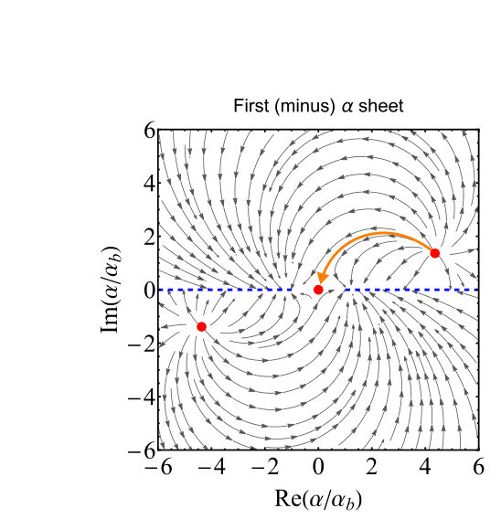
<figcaption class="paper-figure-caption"><b>Fig 5.</b> Figure 5. The α-plane flow and the phase-slip instanton path (orange line) in the bistable regime. The phase-slip path starts at the classical fixed point α = α0 and ends at the saddle point α = 0 (red dots). From the saddle point to the opposite stationary point, the system evolves classically (i.e., in χ = 0 subspace), according to Eq. (9), with no action ac- cumulated along this part of the phase-slip path. The system parameters are set to G = 5, ∆= 2, κ = 0.4, η = 1, U = 0.1, κϕ = 0.</figcaption>
</figure>
</div>

<p><strong>Summary.</strong> This paper investigates rare fluctuations in driven open quantum systems using advanced semiclassical methods. It demonstrates that unlike equilibrium states, these non-equilibrium steady states exhibit large-deviation functions with sharp, non-analytic features. These features arise fundamentally from the competition between multiple distinct instanton trajectories governing the system's dynamics.</p>
<p><strong>Why it may be interesting.</strong> This work provides deep insights into non-equilibrium statistical mechanics by showing that quantum dissipation can induce complex, non-analytic structures in fluctuation statistics, extending concepts from classical instanton theory to the quantum domain.</p>
<details>
<summary>Detailed structure</summary>
<p><strong>Main problem.</strong> The study focuses on characterizing atypical measurement outcomes (rare fluctuations) in the steady states of driven, open quantum systems.</p>
<p><strong>Main result.</strong> The large-deviation function for these systems is generically non-analytic due to the competition between multiple competing semiclassical instanton trajectories. This contrasts with equilibrium systems where analyticity holds.</p>
<p><strong>Method.</strong> The analysis employs semiclassical methods derived from Keldysh path integrals and WKB approximations, relating rare events to instanton solutions of the effective action.</p>
<p><strong>Model / system.</strong> The model is an open quantum system, exemplified by a parametrically driven Kerr oscillator coupled to a dissipative bath, governed by a Lindblad master equation.</p>
<p><strong>Key observables.</strong> Large-deviation function $S(x, p)$ and the phase-slip rate $\Gamma$.</p>
<p><strong>Important parameters / regimes.</strong> Drive strength ($G$), detuning ($\Delta$), dissipation rates ($\kappa, \eta, \kappa_\phi$), and the semiclassical parameter $\hbar$ (or $\delta$).</p>
<p><strong>Assumptions / limitations.</strong> The analysis relies on the WKB approximation for the path integral and identifying an invariant subspace parameterized by $(\alpha(t), \chi(t))$ in the Keldysh formalism.</p>
<p><strong>Figures summary.</strong> Figures illustrate real-time instanton trajectories spanning a fluctuation Riemann surface, showing multiple paths to endpoints. They also map out Stokes lines and anti-Stokes lines on phase space plots, visualizing where non-analyticities occur.</p>
<p><strong>Paper structure.</strong> The paper progresses from establishing the general problem of large deviations in open systems to applying it to a specific driven oscillator model. It develops the semiclassical formalism using Keldysh theory, identifies the multi-valued nature of solutions (Riemann surface), and finally analyzes how Stokes phenomena dictate non-analytic features in the resulting large-deviation function.</p>
</details>
<details>
<summary>Abstract</summary>
<p>We study statistics of atypical measurement outcomes in the steady states of driven open quantum systems. In equilibrium, the probability distribution over the phase space, as encoded in, e.g., the Wigner function, is analytic in the phase-space coordinates. We show that this property is generically lost in driven dissipative systems: their {\it large-deviation function} develops lines and surfaces across which its derivatives are discontinuous. As an illustrative example, we consider a parametrically driven Kerr oscillator coupled linearly and/or nonlinearly to a dissipative bath. Rare fluctuations in the amplitude and phase of the induced oscillations are governed by semiclassical instanton trajectories of the corresponding Keldysh-Lindblad action. We demonstrate that a given fluctuation can be realized through multiple distinct instanton trajectories. The competition between these trajectories leads to abrupt switching of the dominant instanton and, consequently, to non-analytic features in the large-deviation function.</p>
</details>
<p><sub><a href="#top">↑ back to top</a></sub></p>

<p><a id="paper-2606.11311"></a></p>
<h3 id="exact-entanglement-dynamics-beyond-nearest-neighbor-dual-unitary-floquet-systems"><a href="http://arxiv.org/abs/2606.11311v1">Exact Entanglement Dynamics Beyond Nearest-Neighbor Dual-Unitary Floquet Systems</a></h3>
<p><strong>Authors:</strong> Tanay Pathak<br>
<strong>Type:</strong> theory · <strong>Category:</strong> statistical mechanics · <strong>PDF:</strong> <a href="https://arxiv.org/pdf/2606.11311v1">https://arxiv.org/pdf/2606.11311v1</a><br>
<strong>Analysis basis:</strong> full PDF text, analyzed in chunks
<strong>Topic relevance:</strong> 🔥 <code>entanglement &amp; information structure</code> <strong>4/5</strong> · <code>non-equilibrium dynamics</code> <strong>3/5</strong> · <code>analog quantum simulation</code> <strong>2/5</strong> · <code>non-equilibrium universality</code> <strong>2/5</strong> · <code>Keldysh / 2PI / non-Gaussian methods</code> <strong>1/5</strong> · <code>driven-dissipative phase transition</code> <strong>1/5</strong> · <code>methods for driven-dissipative</code> <strong>1/5</strong></p>
<div class="figure-strip-hint">↔ Scroll figures horizontally</div>
<div class="paper-figures-scroll">
<figure class="paper-figure-card">
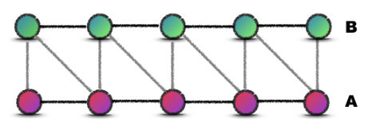
<figcaption class="paper-figure-caption"><b>Fig 1.</b> FIG. 1. Schematic of the range r = 2 construction. Black links form two self-dual KFIM sublattices, while gray links are arbitrary diagonal inter-sublattice couplings. These couplings make the Floquet dynamics genuinely coupled, yet they do not spoil dual-unitarity.</figcaption>
</figure>
<figure class="paper-figure-card">
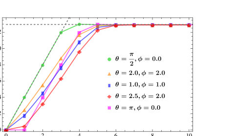
<figcaption class="paper-figure-caption"><b>Fig 2.</b> FIG. 2. The R´enyi-2 entropy for range-2 model evolving from various initial states. We choose total spins L = 30 and subsystem size to be N = 13. The initial state is of the form defined by Eq. (7) and θk = θ, ϕk = ϕ.</figcaption>
</figure>
<figure class="paper-figure-card">
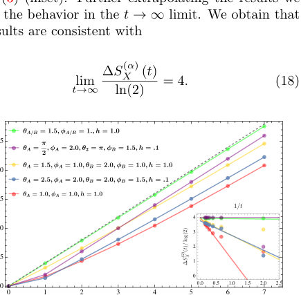
<figcaption class="paper-figure-caption"><b>Fig 3.</b> FIG. 3. The R´enyi-2 entropy for a range-2 model from vari- ous initial states, in the thermodynamic limit obtained. θk, ϕk with k ∈{A, B} denotes the uniform value of θk, ϕk chosen for initial states in each sublattice. Inset shows instantaneous slope, ∆S(2) X (t−1/2)</figcaption>
</figure>
<figure class="paper-figure-card">
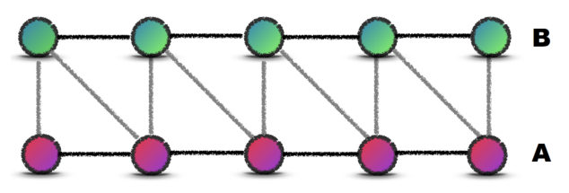
<figcaption class="paper-figure-caption"><b>Fig 4.</b> FIG. 1. Schematic of the range r = 2 construction. Black links form two self-dual KFIM sublattices, while gray links are arbitrary diagonal inter-sublattice couplings. These couplings make the Floquet dynamics genuinely coupled, yet they do not spoil dual-unitarity in the enlarged unit cell.</figcaption>
</figure>
<figure class="paper-figure-card">
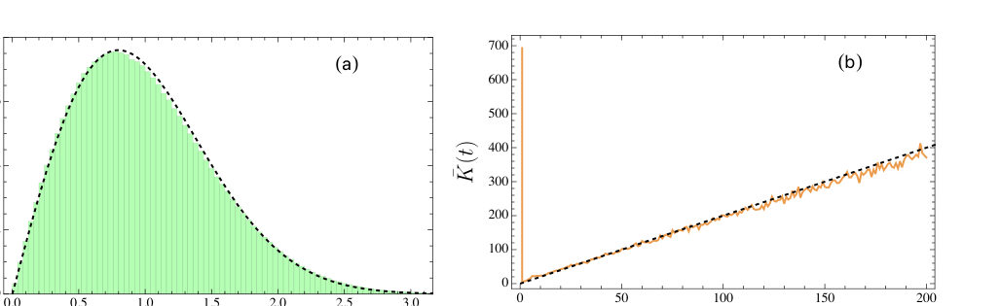
<figcaption class="paper-figure-caption"><b>Fig 5.</b> FIG. 2. (a) Level spacing distribution of the (unfolded) quasi energies of the unitary operator, with L = 12, given by Eq.(10) for generic Jn, hn . We choose hn = 0.5 and Jn is chosen randomly from the interval [0, 1] and we average over 1024 realizations. The dashed curve corresponds to the Wigner surmise for circular orthogonal ensemble (COE). (b) Spectral form factor, as defined using Eq. (13) for the range-2 model. The result shows a clear ramp in agreement with COE results, shown as black dashed line.</figcaption>
</figure>
</div>

<p><strong>Summary.</strong> This paper develops an exact analytical method to calculate entanglement dynamics in Floquet spin models with finite-range interactions, moving beyond the limitations of nearest-neighbor dual-unitary systems. By constructing a staggered sublattice structure that preserves duality, the authors derive explicit formulas for $n$-Rényi entropies. This work provides deep theoretical insight into how interaction range controls entanglement growth rates in quantum many-body physics.</p>
<p><strong>Why it may be interesting.</strong> This work provides a controlled theoretical framework to study how increasing interaction range affects quantum information measures like entanglement growth rates in periodically driven many-body systems.</p>
<details>
<summary>Detailed structure</summary>
<p><strong>Main problem.</strong> The research aims to extend the study of exactly solvable entanglement dynamics beyond nearest-neighbor dual-unitary Floquet systems to incorporate finite-range interactions.</p>
<p><strong>Main result.</strong> They derive exact closed-form expressions for $n$-Rényi entanglement entropies, showing that the interaction range acts as a tunable multiplier on the entanglement growth rate.</p>
<p><strong>Method.</strong> The analysis utilizes space-time duality and the replica trick to evaluate moments of the reduced density matrix ($ ext{tr}[(
ho_X(t))^n]$) for structured spin chains under Floquet evolution.</p>
<p><strong>Model / system.</strong> The system is a spin-1/2 chain governed by a Floquet unitary operator incorporating range-$r$ interactions, which are analytically tractable by structuring the lattice into coupled sublattices that maintain dual-unitarity.</p>
<p><strong>Key observables.</strong> $n$-Rényi entanglement entropies ($S_\alpha^X(t)$), spectral properties (level spacing distribution, spectral form factor).</p>
<p><strong>Important parameters / regimes.</strong> Interaction range $r$, time $t$, and the replica parameter $\alpha$ (or $n$).</p>
<p><strong>Assumptions / limitations.</strong> The construction relies on grouping sites into enlarged unit cells to preserve dual-unitarity despite inter-sublattice couplings, and specific solvable initial states are analyzed.</p>
<p><strong>Figures summary.</strong> Figures illustrate schematic constructions of the $r=2$ model (showing coupled sublattices) and numerical plots showing the time evolution of Rényi entropy for various initial conditions.</p>
<p><strong>Paper structure.</strong> The paper develops the formalism by defining the Hamiltonian structure, applying space-time duality to find exact formulas for density matrix moments using the replica trick, and finally deriving explicit expressions for entanglement entropy in terms of these calculated traces.</p>
</details>
<details>
<summary>Abstract</summary>
<p>Exact results using dual-unitarity largely rely on nearest-neighbor structures, while finite-range interactions typically lead to complications. Going beyond the usual nearest-neighbor setting, we introduce an analytically tractable family of finite-range kicked Ising models that admit exact closed-form entanglement dynamics. The construction is based on a staggered structure in which dual-unitarity is present on sublattices that are then coupled to each other. The central observation is that these inter-sublattice couplings do not obstruct the dual-unitarity of the resulting model. For the minimal interaction range of $r= 2$, we derive exact expressions for all the $n-$Rényi entanglement entropies at all times and show that the result is the sum of the two coupled sublattice contributions. Our framework extends naturally to larger finite interaction ranges and to systems with heterogeneous local Hilbert spaces, without additional assumptions. It thus provides a controlled setting for studying exact entanglement growth beyond strictly nearest-neighbor dual-unitary models.</p>
</details>
<p><sub><a href="#top">↑ back to top</a></sub></p>

<p><a id="paper-2606.12404"></a></p>
<h3 id="collective-neutrino-oscillations-many-body-non-forward-effects-and-non-classicality"><a href="http://arxiv.org/abs/2606.12404v1">Collective neutrino oscillations: Many-body non-forward effects and non-classicality</a></h3>
<p><strong>Authors:</strong> Julien Froustey, Ermal Rrapaj, Yuhao Liu, Gushu Li, Costin Iancu, Vincenzo Cirigliano<br>
<strong>Type:</strong> theory · <strong>Category:</strong> quantum information and computing · <strong>PDF:</strong> <a href="https://arxiv.org/pdf/2606.12404v1">https://arxiv.org/pdf/2606.12404v1</a><br>
<strong>Analysis basis:</strong> full PDF text, analyzed in chunks
<strong>Topic relevance:</strong> 🔥 <code>entanglement &amp; information structure</code> <strong>4/5</strong> · <code>Keldysh / 2PI / non-Gaussian methods</code> <strong>3/5</strong> · <code>non-equilibrium dynamics</code> <strong>2/5</strong> · <code>correlated / nonlocal dissipation</code> <strong>1/5</strong> · <code>driven-dissipative phase transition</code> <strong>1/5</strong> · <code>methods for driven-dissipative</code> <strong>1/5</strong> · <code>non-equilibrium universality</code> <strong>1/5</strong></p>
<div class="figure-strip-hint">↔ Scroll figures horizontally</div>
<div class="paper-figures-scroll">
<figure class="paper-figure-card">
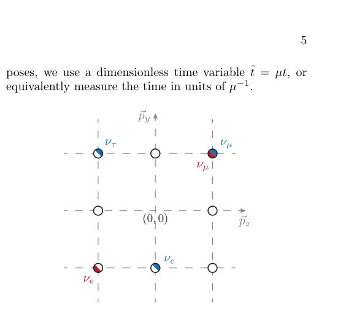
<figcaption class="paper-figure-caption"><b>Fig 1.</b> FIG. 1. Two-dimensional grid of momenta used in this work. The states initially occupied in our test calculation are shown in blue, while the two-neutrino case shown in red is discussed in Appendix C. The momentum mode ⃗p = ⃗0 is excluded, as we restrict ourselves to ultrarelativistic neutrinos.</figcaption>
</figure>
<figure class="paper-figure-card">
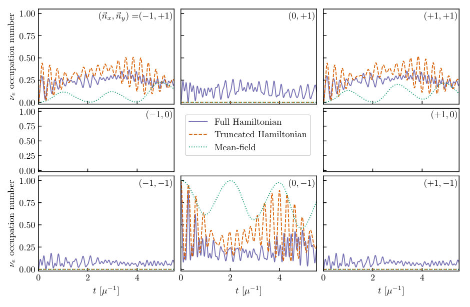
<figcaption class="paper-figure-caption"><b>Fig 2.</b> FIG. 2. Time evolution of the νe occupation numbers for the initial state (25). Many-body calculations using the full (for- ward/exchange) Hamiltonian are shown with solid (dashed) lines, while the mean-field result is shown with a dotted line. Each panel corresponds to the momentum point (px, py) on the grid shown in Fig. 1.</figcaption>
</figure>
<figure class="paper-figure-card">
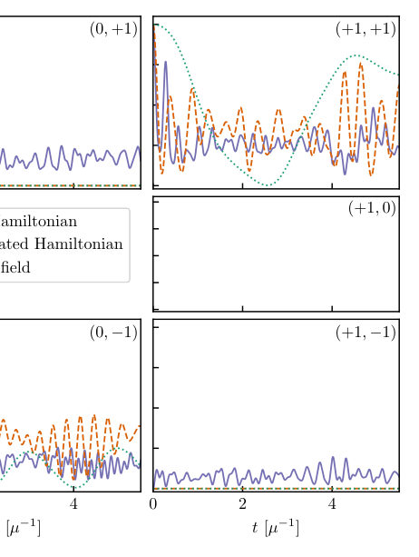
<figcaption class="paper-figure-caption"><b>Fig 3.</b> FIG. 3. Same as Fig. 2, but for the νµ occupation numbers.</figcaption>
</figure>
<figure class="paper-figure-card">
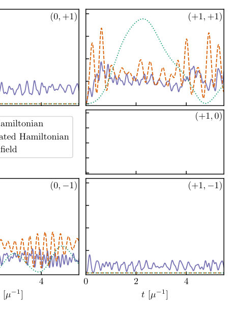
<figcaption class="paper-figure-caption"><b>Fig 4.</b> FIG. 4. Same as Fig. 2, but for the ντ occupation numbers.</figcaption>
</figure>
<figure class="paper-figure-card">
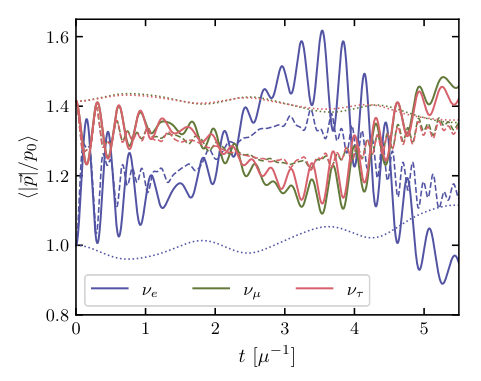
<figcaption class="paper-figure-caption"><b>Fig 5.</b> FIG. 5. Evolution of the average kinetic energy for each neu- trino flavor. Plotting conventions are the same as Fig. 2.</figcaption>
</figure>
</div>

<p><strong>Summary.</strong> The paper rigorously compares different theoretical approaches—mean-field, Quantum Kinetic Equation, and full many-body Hamiltonian—for modeling neutrino flavor oscillations in dense astrophysical matter. It demonstrates that non-forward scattering effects are crucial, leading to significant deviations from simpler models. Furthermore, it quantifies the quantum computational resources required for these complex simulations by analyzing entanglement growth and Trotter error scaling.</p>
<p><strong>Why it may be interesting.</strong> This work directly bridges high-energy astrophysics (neutrino oscillations) with cutting-edge quantum computation theory by quantifying the necessary resources to simulate complex interacting quantum systems beyond mean-field approximations.</p>
<details>
<summary>Detailed structure</summary>
<p><strong>Main problem.</strong> The study compares neutrino evolution using mean-field approximations against full many-body treatments, focusing on non-forward effects and quantifying the resulting quantum non-classicality.</p>
<p><strong>Main result.</strong> Full many-body calculations show significantly higher entanglement entropy compared to truncated or mean-field results, indicating that multi-body correlations are crucial for accurate dynamics. The resource estimation suggests these simulations require substantial computational resources related to gate complexity.</p>
<p><strong>Method.</strong> The authors employ both solving differential equations (QKE/Mean-Field) and estimating quantum circuit requirements (Trotter error scaling, gate costs) for the full Hamiltonian evolution.</p>
<p><strong>Model / system.</strong> The system is a neutrino gas undergoing collective flavor oscillations in dense astrophysical environments. The dynamics are governed by a complex many-body Hamiltonian ($H = H_{  ext{vac}} + H_{
u
u}$), which includes non-forward scattering terms.</p>
<p><strong>Key observables.</strong> Entanglement entropy ($S_{
u_e}(t)$), Rényi entropies ($ar{S}_
u$, $M_2(t)$), occupation numbers of momentum states, and the ratio of general to forward interaction modes ($N_{PS}$).</p>
<p><strong>Important parameters / regimes.</strong> The comparison hinges on the relative importance of non-forward scattering terms versus those captured by mean-field approximations; resource costs are compared against quantum chemistry problems.</p>
<p><strong>Assumptions / limitations.</strong> Key assumptions include using a 'plane waves in a box' discretization for momentum space and employing first-order Trotter error bounds to estimate computational cost.</p>
<p><strong>Figures summary.</strong> Figures compare time evolution of occupation numbers across Full, Truncated, and Mean-field Hamiltonians; entanglement entropy plots show deviations from mean-field predictions; and resource estimation figures detail scaling with system size N.</p>
<p><strong>Paper structure.</strong> The paper systematically develops the mathematical framework for neutrino self-interactions in various dimensions (1D, 2D, 3D), compares QKE/Mean-Field results against full many-body simulations, and concludes by analyzing quantum computational resource requirements via Trotter error bounds.</p>
</details>
<details>
<summary>Abstract</summary>
<p>Neutrino evolution in dense astrophysical environments is typically described either within a quantum kinetic framework, which neglects the build-up of multi-body correlations, or through simplified many-body calculations that allow significant entanglement to develop. In this work, we compare these two approaches in a simple neutrino-gas configuration, with particular emphasis on the role of non-forward scattering processes. These effects are incorporated either through a collision term in the kinetic description, or by considering the full neutrino-neutrino many-body Hamiltonian. We highlight differences between the two descriptions in both their characteristic timescales and asymptotic behavior. Motivated by the natural suitability of quantum computing for many-body calculations, we further investigate the non-classicality of neutrino evolution, discussing Trotter error scaling, along with the associated costs of constructing quantum circuits in terms of entangling gates and non-Clifford gates. We find that the resources needed for neutrino many-body evolution are on the low end of typical high-energy physics problems and on the mid to high end with respect to quantum chemistry problems. For the full Hamiltonian, resource requirements increase relative to the truncated version. We emphasize the importance of efficient fermion-to-qubit encodings, which are essential for reducing the substantial computational resources required for such simulations.</p>
</details>
<p><sub><a href="#top">↑ back to top</a></sub></p>

<p><a id="paper-2606.11340"></a></p>
<h3 id="q-dice-quantum-distributed-interconnect-compiler-and-emulator"><a href="http://arxiv.org/abs/2606.11340v1">Q-DICE: Quantum Distributed Interconnect Compiler and Emulator</a></h3>
<p><strong>Authors:</strong> Michael Silver, Zachary Vernec, Hans-Arno Jacobsen<br>
<strong>Type:</strong> both · <strong>Category:</strong> quantum information and computing · <strong>PDF:</strong> <a href="https://arxiv.org/pdf/2606.11340v1">https://arxiv.org/pdf/2606.11340v1</a><br>
<strong>Analysis basis:</strong> full PDF text, analyzed in chunks
<strong>Topic relevance:</strong> 🔥 <code>QC/QI experiment</code> <strong>4/5</strong> · <code>correlated / nonlocal dissipation</code> <strong>3/5</strong> · <code>methods for driven-dissipative</code> <strong>3/5</strong> · <code>non-equilibrium dynamics</code> <strong>2/5</strong> · <code>driven-dissipative phase transition</code> <strong>1/5</strong></p>
<div class="figure-strip-hint">↔ Scroll figures horizontally</div>
<div class="paper-figures-scroll">
<figure class="paper-figure-card">
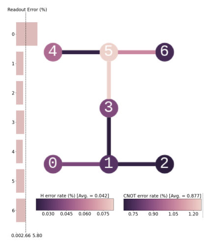
<figcaption class="paper-figure-caption"><b>Fig 1.</b> Fig. 1. IBM Nairobi monolithic superconducting 27-qubit QPU topology and error map. Graph nodes indicate qubits, with respective colors referring to single gate error rates (in this case for the Hadamard gate). Graph edges represent qubit-qubit connections, with respective colors referring to the error rate of a native two-qubit gate on these qubits. Side bars indicate single-qubit readout error rates.</figcaption>
</figure>
<figure class="paper-figure-card">
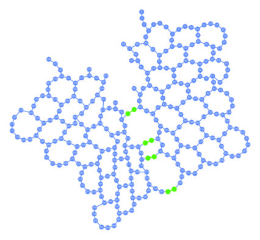
<figcaption class="paper-figure-caption"><b>Fig 2.</b> Fig. 4. Stitched distributed QPU system. Green nodes indicate communication ancilla qubits, with green edges indicating a virtual nonlocal link between, separating two virtual QPUs.</figcaption>
</figure>
<figure class="paper-figure-card">
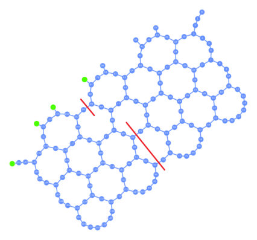
<figcaption class="paper-figure-caption"><b>Fig 3.</b> Fig. 2. IBM Marrakesh monolithic superconducting Heron 156-qubit QPU coupling map. Red lines indicate user-defined cuts for QPU slicing. Green nodes indicate user-defined communication ancilla qubits for QPU stitching.</figcaption>
</figure>
<figure class="paper-figure-card">
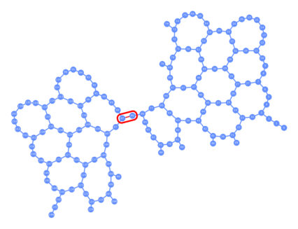
<figcaption class="paper-figure-caption"><b>Fig 4.</b> Fig. 3. Partitioned IBM Marrakesh processor. Red line indicates virtual nonlocal link, separating two virtual QPUs. We refer to these sparse, modular structures as “butterfly backends,” reflecting their uniquely shaped and low- connectivity modular topologies similar to near-term DQC architectures.</figcaption>
</figure>
<figure class="paper-figure-card">
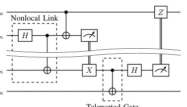
<figcaption class="paper-figure-caption"><b>Fig 5.</b> Fig. 5. Gate teleportation circuit. The dashed box labeled “Nonlocal Link” encloses the entanglement generation and distribution subcircuit consumed by the teleportation. The dashed box labeled “Teleported Gate” encloses the operation applied at Node 2 conditioned on classical measurement outcomes from Node 1.</figcaption>
</figure>
</div>

<p><strong>Summary.</strong> This paper introduces Q-DICE, a comprehensive emulator designed to benchmark distributed quantum computing algorithms by accurately simulating the physical limitations and noise sources inherent in connecting multiple QPUs. It achieves this through novel compiler techniques like QPU slicing/stitching and detailed modeling of nonlocal link errors. The work is crucial for accelerating hardware co-design by providing a reliable tool to test complex, large-scale quantum network protocols.</p>
<p><strong>Why it may be interesting.</strong> The rigorous incorporation of physical link noise models (Kraus operators) into a compiler framework is highly relevant for theorists designing fault-tolerant quantum networks, as it moves beyond idealized gate sets.</p>
<details>
<summary>Detailed structure</summary>
<p><strong>Main problem.</strong> Benchmarking distributed quantum algorithms (DQC) is difficult because current tools cannot realistically simulate or emulate the physical constraints of connecting multiple Quantum Processing Units (QPUs).</p>
<p><strong>Main result.</strong> The proposed Q-DICE emulator accurately models complex noise sources and topological constraints, achieving a low fidelity deviation when simulating established protocols like Grover's search on trapped-ion hardware.</p>
<p><strong>Method.</strong> Q-DICE provides a compiler/emulator framework using programmatic techniques (slicing/stitching) to map circuits onto distributed backends while incorporating physically motivated noise models (Kraus operators).</p>
<p><strong>Model / system.</strong> The system models Distributed Quantum Computing, connecting multiple QPUs via virtual nonlocal links. It supports modeling both Hamiltonian-mediated (superconducting) and entanglement-mediated (photonic/trapped-ion) link noise.</p>
<p><strong>Key observables.</strong> Fidelity deviation between simulation and experiment; Graph state fidelity; Success rate of benchmark algorithms (e.g., Grover's search, Deutsch-Jozsa).</p>
<p><strong>Important parameters / regimes.</strong> Link error probabilities ($p$), coherence times ($T_1, T_2$), link interaction times ($t_{	ext{link}}$), and the degree of topological constraint violation.</p>
<p><strong>Assumptions / limitations.</strong> Standard transpilers fail to respect virtual QPU boundaries; the algorithm uses a constrained random search which does not guarantee global optimality for layout selection.</p>
<p><strong>Figures summary.</strong> Figures illustrate QPU topologies, circuit partitioning (slicing/stitching), and benchmark results comparing simulated fidelity across different noise models (e.g., Gate Teleportation fidelity vs. link error rate).</p>
<p><strong>Paper structure.</strong> The paper introduces the problem gap in DQC benchmarking, details the three core components of Q-DICE (mapping scheme, nonlocal noise modeling, boundary-aware transpilation), validates it across multiple benchmark circuits (Grover's, GHZ, Deutsch-Jozsa), and concludes with advanced topology analysis (ring-of-rings).</p>
</details>
<details>
<summary>Abstract</summary>
<p>As distributed quantum computing (DQC) offers a leading path towards scalable quantum computation, the ability to benchmark distributed algorithms under realistic conditions becomes critical for system co-design. However, without access to physical systems, researchers lack tools to evaluate distribution protocols. We introduce Q-DICE (Quantum Distributed Interconnect Compiler and Emulator), a hardware-aware emulation environment for benchmarking distributed quantum circuits on classical simulators and on NISQ-era monolithic hardware. This work provides three core contributions: (1) a programmatic scheme to construct distributed QPU backends, utilizing two novel techniques - QPU slicing and stitching - to facilitate distributed circuit mapping, (2) a methodology for modeling nonlocal link noise using physically motivated Kraus operators and stochastic error channels, and (3) a boundary-aware circuit mapping algorithm enforcing distributed QPU topology constraints during transpilation. Together, these components constitute a distribution-aware compiler and noise-modeling engine that faithfully enforces the physical limitations of distributed quantum hardware within existing execution environments. We validate Q-DICE against a multitude of experimentally demonstrated quantum circuits, including a distributed Grover's search on optically linked trapped-ion hardware, achieving a worst-case fidelity deviation of 4% between simulated and experimental results. These findings demonstrate Q-DICE's capacity to accurately reproduce real distributed quantum system behavior across platforms, streamlining experimentation with distributed quantum algorithms and architectures.</p>
</details>
<p><sub><a href="#top">↑ back to top</a></sub></p>

<p><a id="paper-2606.11579"></a></p>
<h3 id="tensor-network-based-distributed-quantum-dynamics-on-independent-quantum-computers"><a href="http://arxiv.org/abs/2606.11579v1">Tensor-Network-Based Distributed Quantum Dynamics on Independent Quantum Computers</a></h3>
<p><strong>Authors:</strong> Anurag Dwivedi, Melissa C. Revelle, Daniel S. Lobser, Brian K. McFarland, Edward C. Tortorici, Christopher G. Yale, Susan M. Clark, Philip Richerme, Srinivasan S. Iyengar<br>
<strong>Type:</strong> both · <strong>Category:</strong> quantum information and computing · <strong>PDF:</strong> <a href="https://arxiv.org/pdf/2606.11579v1">https://arxiv.org/pdf/2606.11579v1</a><br>
<strong>Analysis basis:</strong> full PDF text, analyzed in chunks
<strong>Topic relevance:</strong> 🔥 <code>QC/QI experiment</code> <strong>4/5</strong> · <code>methods for driven-dissipative</code> <strong>3/5</strong> · <code>analog quantum simulation</code> <strong>2/5</strong> · <code>correlated / nonlocal dissipation</code> <strong>1/5</strong> · <code>entanglement &amp; information structure</code> <strong>1/5</strong> · <code>non-equilibrium dynamics</code> <strong>1/5</strong></p>
<div class="figure-strip-hint">↔ Scroll figures horizontally</div>
<div class="paper-figures-scroll">
<figure class="paper-figure-card">
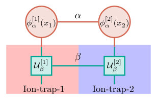
<figcaption class="paper-figure-caption"><b>Fig 1.</b> FIG. 1: The essence of the distributed algorithm presented here which appears from a tensor net- work formalism. There is one set of parallel streams of computational tasks for each value of the pair of variables (α, β). Thus, there are [α × β × number of nuclear dimensions] parallel computing tasks, each executed here as a separate ion-trap com- putation, possible due to elevation of the entanglement variables. This yields an enormous computational ad- vantage as the number of dimensions increase. Future developments will involve a heterogeneous set of classi- cal and hardware systems all runing these parallel set of tasks.</figcaption>
</figure>
<figure class="paper-figure-card">

<figcaption class="paper-figure-caption"><b>Fig 2.</b> FIG. 2: Time evolution of a wavepacket in a tensor- network representation as given by Eq. (3). The ini- tial state is parameterized by entanglement variables ¯α, while the time-evolution propagator is characterized by ¯β.</figcaption>
</figure>
<figure class="paper-figure-card">

<figcaption class="paper-figure-caption"><b>Fig 3.</b> FIG. 4: The circuit in Fig. 3 can be distributed, in principle, across four quantum computers, where each constituent sub-circuit can be executed simultaneously. In this paper, this is all done sequentially on one quan- tum computer using three qubits. The aggregation (the double vertical arrow at the bottom of the figure) is also done classically here through measurement, and the final state inherits the entanglement from the uni- tary above. As described in Section II C, such entangle- ment arises from the potential energy surface.</figcaption>
</figure>
<figure class="paper-figure-card">

<figcaption class="paper-figure-caption"><b>Fig 4.</b> FIG. 6: (a) Uniformly controlled gate (UCG) representation of the block-diagonal operator shown in Fig. 5.</figcaption>
</figure>
<figure class="paper-figure-card">

<figcaption class="paper-figure-caption"><b>Fig 5.</b> FIG. 7: The circuit in Fig. 6 can, in principle, be distributed across several quantum computers, and this figure shows the full-scale parallel generalization of our algorithm. The ion-traps are indexed here using the dimension (first index), and the two entanglement indices following the dimension. So for example, “QC-(2,1,1)” implies the specific quantum hardware system (trapped ions in our case) that computes the second dimension for entanglement variables β1 = β2 = 1. As is clear, the number of parallel streams (dotted boxes) is equal to P</figcaption>
</figure>
</div>

<p><strong>Summary.</strong> The paper proposes using tensor networks to decompose the challenging task of simulating quantum wavepacket dynamics into many independent, smaller computational tasks. This decomposition allows for asynchronous execution across multiple, heterogeneous quantum computers, which was experimentally tested on a trapped-ion system to calculate vibrational spectra with high accuracy.</p>
<p><strong>Why it may be interesting.</strong> This work directly addresses the scalability bottleneck in simulating complex molecular dynamics by providing a concrete algorithmic blueprint that maps entanglement structure onto parallel hardware resources, making it highly relevant to AMO/quantum optics simulation efforts.</p>
<details>
<summary>Detailed structure</summary>
<p><strong>Main problem.</strong> Simulating complex, high-dimensional quantum dynamics (like molecular wavepacket evolution) efficiently on near-term, heterogeneous quantum hardware.</p>
<p><strong>Main result.</strong> The authors developed a tensor-network based formalism that decomposes global unitary evolution into independent, parallelizable sub-tasks executable across distributed quantum processors.</p>
<p><strong>Method.</strong> The core method involves mapping the time-evolution operator onto a block-diagonal structure within an enlarged Hilbert space, allowing for decomposition into multiple, smaller, and independently controlled quantum circuits (UCGs).</p>
<p><strong>Model / system.</strong> The simulation is demonstrated on protonated water clusters, modeling vibrational spectra. The implementation utilizes trapped-ion quantum computers with native partial-entangling XX(theta) gates.</p>
<p><strong>Key observables.</strong> Vibrational spectral properties and energy differences ($\omega$), calculated via the Fourier power spectrum of time-correlation functions.</p>
<p><strong>Important parameters / regimes.</strong> The fidelity improvement is quantified by reducing expected two-qubit gate infidelity by over 30% compared to conventional decompositions.</p>
<p><strong>Assumptions / limitations.</strong> The approach assumes that for practical problems, the entanglement structure allows for a decomposition into efficiently manageable, parallelizable sub-circuits suitable for hybrid quantum/classical execution.</p>
<p><strong>Figures summary.</strong> Figures illustrate the distributed algorithm derived from tensor networks (Fig. 1), the mapping to block-diagonal UCG circuits (Figs. 3, 6), and the overall phase estimation structure for spectroscopy (Fig. 8).</p>
<p><strong>Paper structure.</strong> The paper progresses by first establishing the theoretical link between tensor network decomposition of the time-evolution operator ($\hat{U}$) and its representation as a block-diagonal unitary in an elevated space. This leads to a circuit implementation using UCGs, which is then generalized into a fully asynchronous, distributed quantum computing architecture suitable for calculating spectral functions via QPE.</p>
</details>
<details>
<summary>Abstract</summary>
<p>We present an approach based on tensor networks for distributed quantum computing simulation of chemical wavepacket dynamics in a continuous variable representation. The central idea is that the tensor-network representation of the multidimensional time-evolution operator naturally induces an elevated Hilbert space where the dynamics decomposes into a set of independent lower-dimensional propagations. This transformation converts an entangled quantum evolution into a set of parallel computational tasks that can be executed asynchronously across heterogeneous quantum and classical computing architectures. The resulting formalism establishes a direct connection between tensor-network decompositions, uniformly controlled quantum circuits, and asynchronous distributed quantum computing. The approach is developed with a goal towards hybrid quantum/classical implementation, and is appropriate for a general heterogeneous mixture of quantum hardware systems. The experimental realization of the asynchronously distributed quantum processes that arise from the tensor-network decomposition are carried out on the Sandia National Laboratories' trapped-ion quantum computer, where the circuits are compiled using native partial-entangling $XX(θ)$ gates, reducing the expected two-qubit gate infidelity by more than 30\% relative to conventional fully entangling decompositions. We demonstrate the methodology by quantum computing the vibrational spectra of a small protonated water cluster that shows critical quantum nuclear behavior. Such water cluster systems have been found to be challenging for experimental action spectroscopy and for theory, and here, for the first time, we provide results for vibrational spectroscopy that are in agreement with the respective classical results to within 4cm$^{-1}$, thus allowing for the potential for spectroscopic accuracy from quantum computations.</p>
</details>
<p><sub><a href="#top">↑ back to top</a></sub></p>

<p><a id="paper-2606.12159"></a></p>
<h3 id="grand-canonical-phase-diagram-and-chiral-current-suppression-at-math275math-flux-in-a-bosonic-two-leg-ladder"><a href="http://arxiv.org/abs/2606.12159v1">Grand-canonical phase diagram and chiral-current suppression at $π$ flux in a bosonic two-leg ladder</a></h3>
<p><strong>Authors:</strong> Meng Zhang, Qingyun Xu, Zhi Lin<br>
<strong>Type:</strong> theory · <strong>Category:</strong> quantum gases · <strong>PDF:</strong> <a href="https://arxiv.org/pdf/2606.12159v1">https://arxiv.org/pdf/2606.12159v1</a><br>
<strong>Analysis basis:</strong> full PDF text, analyzed in chunks
<strong>Topic relevance:</strong> 🔥 <code>analog quantum simulation</code> <strong>4/5</strong> · <code>methods for driven-dissipative</code> <strong>3/5</strong> · <code>non-equilibrium dynamics</code> <strong>2/5</strong> · <code>Keldysh / 2PI / non-Gaussian methods</code> <strong>1/5</strong> · <code>driven-dissipative phase transition</code> <strong>1/5</strong></p>
<div class="figure-strip-hint">↔ Scroll figures horizontally</div>
<div class="paper-figures-scroll">
<figure class="paper-figure-card">

<figcaption class="paper-figure-caption"><b>Fig 1.</b> FIG. 2. (a) Key observables Jc, J⊥, I, ⟨a⟩, ρ, and ∆n as functions of φ/π obtained from CGMF calculations at K = 10t, µ = −2.47, and t = 0.252. (b) Enlarged view of the region enclosed by the magenta dashed box in (a).</figcaption>
</figure>
<figure class="paper-figure-card">

<figcaption class="paper-figure-caption"><b>Fig 2.</b> FIG. 3. (a)The grand-canonical t–µ phase diagrams obtained from CGMF calculations at K = 10t for φ/π = 0 (blue), 0.25 (red), 0.5 (yellow), and 0.95 (purple). Data points are connected by lines as a guide to the eye. (b) Enlarged view of (a).</figcaption>
</figure>
<figure class="paper-figure-card">

<figcaption class="paper-figure-caption"><b>Fig 3.</b> FIG. 4. Phase diagram.(a) Key observables Jc, J⊥, I, ⟨a⟩, ρ, and ∆n as functions of φ/π in the high-filling regime, ob- tained from CGMF calculations at K = 10t, µ = 0.3, and t = 0.11275. (b) Enlarged view of the region enclosed by the magenta dashed box in (a). (c) Phase diagram of the two-leg semisynthetic flux ladder in the t–φ plane in the high-filling regime, obtained from the CGMF method for K = 10t and µ = 0.3. The gray dashed line at t = 0.11275 indicates the fixed-t cut corresponding to the parameter points of the curves in (a).</figcaption>
</figure>
</div>

<p><strong>Summary.</strong> This paper maps the phase diagram of interacting bosons on a two-leg ladder under an artificial magnetic flux using the Cluster Gutzwiller Mean-Field method. It characterizes various superfluid and Mott insulating states based on current measurements. The key finding is that at $\phi=\pi$, symmetry forces the system into a nonchiral Mott insulator, providing crucial theoretical guidance for experiments with synthetic gauge fields.</p>
<p><strong>Why it may be interesting.</strong> This work provides a theoretically rigorous and computationally efficient framework for mapping complex quantum phases (like those involving chirality) in synthetic gauge fields, directly relevant to ultracold atom experiments using optical lattices.</p>
<details>
<summary>Detailed structure</summary>
<p><strong>Main problem.</strong> The study investigates the ground-state phase diagram of repulsively interacting bosons on a two-leg ladder threaded by an artificial magnetic flux, with a specific focus on the physics at the $\pi$-flux point.</p>
<p><strong>Main result.</strong> At $\phi=\pi$, symmetry constraints enforce the vanishing of net chiral currents, leading to a nonchiral Mott-insulating state, which contrasts sharply with the expected chiral superfluidity away from this flux value.</p>
<p><strong>Method.</strong> The authors employ the Cluster Gutzwiller Mean-Field (CGMF) method on a $2	imes4$ cluster to calculate ground-state properties and construct grand-canonical phase diagrams.</p>
<p><strong>Model / system.</strong> The system is modeled as repulsively interacting bosons on a two-leg ladder subjected to a uniform artificial magnetic flux ($\phi$). The Hamiltonian includes tunneling terms (intra-leg $t$, inter-leg $K$) and interaction terms ($U$), alongside a chemical potential $\mu$.</p>
<p><strong>Key observables.</strong> Superfluid order parameter, leg-resolved currents, chiral current, ratio of currents on adjacent legs, and density imbalance between the two legs.</p>
<p><strong>Important parameters / regimes.</strong> Artificial magnetic flux ($\phi$), filling fraction ($
ho$), interaction strength ($U/t$), and chemical potential ($\mu$).</p>
<p><strong>Assumptions / limitations.</strong> The use of the CGMF method is an approximation balancing computational efficiency with physical accuracy, and previous studies were limited to fixed-density calculations.</p>
<p><strong>Figures summary.</strong> Figures illustrate phase boundaries (e.g., M-SF, V-SF, BLP-SF, MI) across different flux values, showing how the ground state evolves as a function of flux and density.</p>
<p><strong>Paper structure.</strong> The paper first analyzes the system's phases using CGMF diagnostics to distinguish between various superfluid/Mott regimes. It then constructs the grand-canonical $t-\mu$ phase diagrams, culminating in a detailed analysis of the singular $\phi=\pi$ point where chiral symmetry dictates the ground state.</p>
</details>
<details>
<summary>Abstract</summary>
<p>We investigate the ground-state phase diagram of repulsively interacting bosons on a two-leg ladder threaded by a uniform artificial magnetic flux, using the cluster Gutzwiller mean-field method. In the strong-rung-coupling regime, self-consistent calculations are performed on a $2\times4$ cluster. By analyzing the superfluid order parameter, leg-resolved currents, chiral current, the current ratio on adjacent legs, and the density imbalance between the two legs, we distinguish Mott-insulating from superfluid regimes and characterize the observed states as Meissner-like, vortex-like (superfluid or Mott insulating), or biased-ladder. In regions overlapping with previous DMRG studies, our results qualitatively agree with the established phase structure, demonstrating that the cluster Gutzwiller approach balances computational efficiency and physical accuracy. We then construct the first grand-canonical $t$--$μ$ phase diagrams for this system, revealing how the magnetic flux modifies the shape, tilt, and extent of the Mott lobes. We further explore previously inaccessible regimes, including higher fillings $ρ\gtrsim1$ and the intermediate interaction window $U/t\in[7.69,9.09]$. Special attention is paid to $\varphi=π$, where the effective triangular-ladder mapping becomes singular. Owing to the equivalence of $\varphi=π$ and $-π$ modulo $2π$, a combined symmetry forbids net chiral currents, leading to a nonchiral Mott-insulating state, in contrast to the chiral-superfluid tendency expected away from $\varphi=π$. Our results offer a computationally efficient route for mapping the global phase structure of bosonic flux ladders and provide guidance for future ultracold-atom experiments in artificial gauge fields.</p>
</details>
<p><sub><a href="#top">↑ back to top</a></sub></p>

<p><a id="paper-2606.12173"></a></p>
<h3 id="on-chip-quantum-randomness-amplification"><a href="http://arxiv.org/abs/2606.12173v1">On-Chip Quantum Randomness Amplification</a></h3>
<p><strong>Authors:</strong> Lang Li, Yutian Wu, Giulio Chiribella, Ravishankar Ramanathan<br>
<strong>Type:</strong> both · <strong>Category:</strong> quantum information and computing · <strong>PDF:</strong> <a href="https://arxiv.org/pdf/2606.12173v1">https://arxiv.org/pdf/2606.12173v1</a><br>
<strong>Analysis basis:</strong> full PDF text, analyzed in chunks
<strong>Topic relevance:</strong> 🔥 <code>QC/QI experiment</code> <strong>4/5</strong> · <code>quantum optics experiment</code> <strong>3/5</strong> · <code>Keldysh / 2PI / non-Gaussian methods</code> <strong>1/5</strong> · <code>driven-dissipative phase transition</code> <strong>1/5</strong> · <code>entanglement &amp; information structure</code> <strong>1/5</strong> · <code>methods for driven-dissipative</code> <strong>1/5</strong></p>
<div class="figure-strip-hint">↔ Scroll figures horizontally</div>
<div class="paper-figures-scroll">
<figure class="paper-figure-card">

<figcaption class="paper-figure-caption"><b>Fig 1.</b> FIG. 1: Schematic of our energy-constrained SDI randomness amplification protocol. A sequence of imperfect random bits is provided by an ε-biased Santha-Vazirani source (left). The sequence is partitioned into a subsequence X, used as input for an untrusted device, and another subsequence Z, used as a seed for a randomness extractor. The untrusted device consists of a preparation module (P), which prepares states with energy upper bounded by a given value ω, and a measurement module (M), which produces a string of classical output bits B. The preparation and measurement module, instead, are allowed to be correlated, by sharing an entangled state σP M (dashed line ), which may be correlated...</figcaption>
</figure>
<figure class="paper-figure-card">

<figcaption class="paper-figure-caption"><b>Fig 2.</b> FIG. 2: Certified randomness in the presence of classical correlations between preparation and mea- surement devices. The plots display certified single-round entropy bounds as a function of the Santha-Vazirani source bias ε ∈[0, 0.5]. The blue curve represents the standard conditional min-entropy H(ε,ω) min (B|X, E, Λ). The orange curve depicts the conditional von Neumann entropy H(ε,ω)(B|X, E, Λ) computed via standard Gauss-Radau method, while the green dashed curve shows the improved bound using our variational method. Subplots (a)–(d), with suitable choices of parameters in range: (a) ω(ε) ≤0.068, (b) ω(ε) ≤0.065, (c) ω(ε) ≤0.064, (d) ω(ε) ≤0.060, correspond to varying energy...</figcaption>
</figure>
<figure class="paper-figure-card">

<figcaption class="paper-figure-caption"><b>Fig 3.</b> FIG. 3: Experimental SDI randomness amplification. (a) Schematics of the setup. The light emitted by 1550 nm laser is attenuated by a variable optical attenuator (VOA). The attenuated light then enters into an integrated electronic/optical (E/O) platform, which produces the coherent states used by our protocol. The coherent states exit the E/O platform through the optical output port (upper link in the picture) and undergo a test to verify that they satify the required energy bound. They go through a 90:10 beam splitter (BS), and the smaller fraction of the light is directed to a power meter (top right), while the larger fraction eventually undergoes a heterodyne measurement. Before...</figcaption>
</figure>
<figure class="paper-figure-card">

<figcaption class="paper-figure-caption"><b>Fig 4.</b> FIG. 4: Experimentally certified entropies. The three curves show three lower bounds on the von Neu- mann entropy as a function of the SV source bias under the experimental parameters of our setup. Specifically, the bounds are obtained from our variational Gauss- Radau method (green dashed line), from the standard node Gauss-Radau method (orange solid line), and from the min-entropy baseline (blue solid line). In both panels, the insets provide a magnified view of the low-entropy re- gion ε ∈[0.11, 0.13]. The star markers show the certified values for the representative value ε = 0.12.</figcaption>
</figure>
<figure class="paper-figure-card">

<figcaption class="paper-figure-caption"><b>Fig 5.</b> FIG. 1: Randomness Amplification Protocol. Our protocol consists of three stages. The first stage is the generation of quantum randomness through a prepare-and-measure setup, in which the prepared states have bounded energy, close to the ground state energy. The second stage is the estimation of the MDL score from the empirical data. If the MDL score is below a given threshold, the protocol proceeds to the third and final state: extraction of randomness from the measurement outcomes B and from an additional bit string Z generated by the SV source.</figcaption>
</figure>
</div>

<p><strong>Summary.</strong> The paper presents a breakthrough demonstration of on-chip Quantum Randomness Amplification using Semi-Device-Independent protocols. By integrating advanced variational entropy certification techniques onto a silicon photonic chip, the authors achieved a high, practical throughput rate of 20 Mbps. This work paves the way for deploying quantum cryptographic hardware in portable telecom devices.</p>
<p><strong>Why it may be interesting.</strong> This work directly bridges fundamental quantum information theory (entropy bounding) with cutting-edge solid-state photonics engineering, providing a concrete blueprint for next-generation quantum cryptographic hardware.</p>
<details>
<summary>Detailed structure</summary>
<p><strong>Main problem.</strong> The central problem is achieving high-rate, secure randomness amplification using Semi-Device-Independent (SDI) protocols.</p>
<p><strong>Main result.</strong> The authors demonstrated the first on-chip implementation of SDI randomness amplification on a silicon photonic chip, achieving a practical throughput rate of 20 Mbps.</p>
<p><strong>Method.</strong> They combine advanced theoretical techniques—specifically an upgraded variational Gauss-Radau method for entropy certification—with state-of-the-art integrated photonics hardware.</p>
<p><strong>Model / system.</strong> The system is an integrated silicon photonic chip utilizing an electro-optical (EO) and opto-electrical (OE) platform operating at 1550 nm. It implements a protocol that extracts uniform bits from biased quantum seeds generated via an $\epsilon$-biased Santha-Vazirani source.</p>
<p><strong>Key observables.</strong> Certified von Neumann entropy, MDL Score, throughput rate (20 Mbps), and frequency responses ($\approx 47 	ext{ GHz}$ EO, $52 	ext{ GHz}$ OE).</p>
<p><strong>Important parameters / regimes.</strong> Bias parameter $\epsilon$ (e.g., 0.12); energy bound $\omega$; raw data length ($n=10^{11}$ bits); output security level ($\epsilon_{	ext{sec}} \le 10^{-12}$).</p>
<p><strong>Assumptions / limitations.</strong> The protocol relies on low-energy constraints ($\omega$) and the assumption that variational methods provide tighter entropy bounds than standard Gauss-Radau techniques.</p>
<p><strong>Figures summary.</strong> Figures illustrate experimental setups, frequency responses (EO/OE), and comparative plots showing certified entropy lower bounds derived from different theoretical methods versus the source bias $\epsilon$.</p>
<p><strong>Paper structure.</strong> The paper progresses by first establishing the need for SDI protocols, then introducing the variational Gauss-Radau method to tighten entropy bounds, followed by detailed characterization of the integrated photonic hardware (EO/OE responses), and culminating in the demonstration of high-rate randomness generation.</p>
</details>
<details>
<summary>Abstract</summary>
<p>Randomness amplification, the task of extracting uniform private bits from biased seeds that may be partly known by a malicious third party, is of central importance in cryptography. The highest security in this task is provided by a class of quantum protocols known as device-independent, which however are challenging to integrate into scalable devices. Semi-device-independent (SDI) protocols are a promising alternative that guarantees security under few natural assumptions, such as bounds on the amount of energy used by the devices. Here, we provide the first demonstration of SDI randomness amplification on an integrated silicon photonic chip, achieving a throughput rate of 20 Mbps suitable for practical applications. This rate is achieved through a novel technique for SDI entropy certification, which delivers strictly tighter von Neumann entropy bounds compared to existing methods and remains valid even if the preparation and measurement devices share quantum correlations. Overall, the methods developed in this work enable the integration of SDI technology into portable telecom devices, opening up a new generation of quantum cryptographic hardware.</p>
</details>
<p><sub><a href="#top">↑ back to top</a></sub></p>

<p><a id="paper-2606.11882"></a></p>
<h3 id="tensor-network-algorithm-for-many-body-trace-norms"><a href="http://arxiv.org/abs/2606.11882v1">Tensor-Network Algorithm for Many-Body Trace Norms</a></h3>
<p><strong>Authors:</strong> Seunghun Lee, Eun-Gook Moon<br>
<strong>Type:</strong> theory · <strong>Category:</strong> numerical methods · <strong>PDF:</strong> <a href="https://arxiv.org/pdf/2606.11882v1">https://arxiv.org/pdf/2606.11882v1</a><br>
<strong>Analysis basis:</strong> full PDF text, analyzed in chunks
<strong>Topic relevance:</strong> 🔥 <code>entanglement &amp; information structure</code> <strong>4/5</strong> · <code>methods for driven-dissipative</code> <strong>3/5</strong> · <code>analog quantum simulation</code> <strong>1/5</strong> · <code>correlated / nonlocal dissipation</code> <strong>1/5</strong> · <code>driven-dissipative phase transition</code> <strong>1/5</strong> · <code>non-equilibrium dynamics</code> <strong>1/5</strong></p>
<div class="figure-strip-hint">↔ Scroll figures horizontally</div>
<div class="paper-figures-scroll">
<figure class="paper-figure-card">

<figcaption class="paper-figure-caption"><b>Fig 1.</b> FIG. 1. (a) The sign function sgn(x) (blue solid curve) and Zolotarev’s rational approximation Zℓ,r(x) (red dashed curve). The approximation works well on [1, −ℓ]∪[ℓ, 1] (blue- shaded region) and breaks down for |x| &lt; ℓ(red-shaded re- gion). (b) Relative error of the absolute-value approximation xZℓ,r(x), bounded by a constant Crρ−(2r+1) (green dashed line) within the blue-shaded region. The parameters used are ℓ= 10−7 and r = 20.</figcaption>
</figure>
<figure class="paper-figure-card">

<figcaption class="paper-figure-caption"><b>Fig 2.</b> FIG. 2. (a) Local linear system obtained by differentiating the objective function Eq. (6) with respect to complex-conjugate of the local tensor Xk of the variational MPS |X⟩. The orange and yellow boxes depict the MPO A and the variational MPS |X⟩, respectively, while the checkered patterns indicate Hermitian conjugation. The matrix M and vector ⃗B are constructed from the left and right environment tensors VL,R and WL,R, analogous to DMRG. (b) The simplified local linear system [see Eq. (7)] obtained after bringing |X⟩into the mixed canonical form.</figcaption>
</figure>
<figure class="paper-figure-card">

<figcaption class="paper-figure-caption"><b>Fig 3.</b> FIG. 3. (a) Estimated half-chain entanglement negativity N of the decohered cluster state ρ of length L under the phase- flip noise. The dashed curve shows the exact value in Eq. (8). The dotted vertical line marks pc = 1 −1/ √</figcaption>
</figure>
<figure class="paper-figure-card">

<figcaption class="paper-figure-caption"><b>Fig 4.</b> FIG. 4. Histogram of the estimated negativity for 20 instances of random separable mixed states ρ = Pq i=1 piσi,1 ⊗σi,2 with chain length L = 20 and q ≤3. The parameters used are ℓ= 10−7, r = 20 and χ = 50.</figcaption>
</figure>
<figure class="paper-figure-card">

<figcaption class="paper-figure-caption"><b>Fig 5.</b> FIG. 5. (a) Graphical illustration of the MPO representation of A = TrHp[|ψσ⟩⟨ψρ|], constructed from the MPS purifica- tions |ψρ⟩and |ψσ⟩of the mixed states ρ and σ, whose fidelity is to be estimated. Black (magenta) legs of |ψρ,σ⟩represent the physical (ancillary) Hilbert space Hp (Ha). (b) Estimated normalized quantum Fisher information fQ = FQ/L2 of the GHZ state of length L under amplitude damping noise. The solid curve shows the exact value given in Eq. (13). (c) Ad- ditive error of the estimated fQ. The parameters used are ℓ= 10−12, r = 30 and χ ≤20. For θ, we use θ = 0.05, 0.03, and 0.025 for L = 10, 20, and 30, respectively.</figcaption>
</figure>
</div>

<p><strong>Summary.</strong> The paper presents a novel tensor-network algorithm to overcome the computational bottleneck of evaluating trace norms for many-body operators. By combining Zolotarev's rational approximation with a DMRG-like variational solver, it achieves controlled and systematically improvable estimates for key quantum information measures like entanglement negativity. This opens a practical pathway for studying mixed states in large quantum systems using tensor networks.</p>
<p><strong>Why it may be interesting.</strong> This work provides a powerful, scalable tool for calculating non-local correlation measures (like entanglement negativity) in large quantum systems that are otherwise intractable due to the exponential scaling of required matrix operations.</p>
<details>
<summary>Detailed structure</summary>
<p><strong>Main problem.</strong> The primary challenge is efficiently calculating trace norms of Matrix Product Operators (MPOs) for large many-body quantum systems, as exact diagonalization is computationally infeasible.</p>
<p><strong>Main result.</strong> The authors introduce a controlled tensor-network algorithm that estimates these trace norms and related quantities with systematically improvable accuracy, surpassing the limitations of polynomial-based Lanczos methods.</p>
<p><strong>Method.</strong> The technique combines Zolotarev's rational approximation for the sign function with a variational formulation solved using a Density-Matrix Renormalization Group (DMRG)-like algorithm to estimate $  ext{Tr}[|A|]$.</p>
<p><strong>Model / system.</strong> The method is applied to general many-body quantum systems described by MPOs, benchmarking its utility on observables like entanglement negativity and quantum fidelity for states such as decohered cluster states.</p>
<p><strong>Key observables.</strong> Trace norm ($\|A\|_1$), Entanglement Negativity ($N(
ho)$), Quantum Fidelity ($F(
ho, \sigma)$), and Quantum Fisher Information (QFI).</p>
<p><strong>Important parameters / regimes.</strong> The approximation accuracy is controlled by the spectral cutoff $\ell$ and the rational approximation degree $r$. The system dynamics are governed by noise parameters like $p$ in decoherence models.</p>
<p><strong>Assumptions / limitations.</strong> The method assumes that the required trace norm can be accurately approximated via the variational minimization problem, and it compares favorably against Lanczos methods which rely on polynomial approximations.</p>
<p><strong>Figures summary.</strong> Figures illustrate the Zolotarev approximation of the sign function; they also show convergence studies comparing the relative error of the estimated trace norm using this method versus a standard Lanczos approach for various physical states.</p>
<p><strong>Paper structure.</strong> The paper first introduces the computational bottleneck and proposes the core variational/rational approximation technique. It then details its application to calculate specific quantum information measures (negativity, fidelity) on benchmark systems, concluding with convergence studies comparing it against existing numerical techniques.</p>
</details>
<details>
<summary>Abstract</summary>
<p>Trace norms are fundamental to quantum information theory, yet in many-body systems their evaluation remains a major computational bottleneck, as it generally requires diagonalizing exponentially large operators. Here, we overcome this bottleneck by introducing a controlled tensor-network algorithm for estimating the trace norm of matrix product operators without full diagonalization. The key idea is to combine Zolotarev's rational approximation to the sign function with a variational formulation solved using a density-matrix-renormalization-group-like algorithm. The resulting approximation is systematically improvable, with its accuracy controlled by the rational approximation parameters and the spectral weight near zero. Beyond the reach of exact diagonalization, we demonstrate controlled trace-norm calculations for entanglement negativity, quantum fidelity and quantum Fisher information, achieving substantially improved accuracy over polynomial-based Lanczos approaches. Our results establish trace-norm-based quantities as practical tensor-network observables, opening a route toward tensor-network studies of quantum information in mixed states.</p>
</details>
<p><sub><a href="#top">↑ back to top</a></sub></p>

<p><a id="paper-2606.11919"></a></p>
<h3 id="quantum-tidal-locking-in-orbiting-bose-einstein-condensates"><a href="http://arxiv.org/abs/2606.11919v1">Quantum tidal locking in orbiting Bose-Einstein condensates</a></h3>
<p><strong>Authors:</strong> Yaoyuan Fan, Shuoyu Shi, Lang Cao, Ziyue He, Qiuxin Zhang, Dong Hu, Yu Wang, Qing Wang, Tianwei Zhou, Xiaoji Zhou<br>
<strong>Type:</strong> both · <strong>Category:</strong> quantum gases · <strong>PDF:</strong> <a href="https://arxiv.org/pdf/2606.11919v1">https://arxiv.org/pdf/2606.11919v1</a><br>
<strong>Analysis basis:</strong> full PDF text, analyzed in chunks
<strong>Topic relevance:</strong> 🔥 <code>analog quantum simulation</code> <strong>4/5</strong> · <code>non-equilibrium dynamics</code> <strong>2/5</strong> · <code>Frenkel-Kontorova</code> <strong>1/5</strong> · <code>correlated cavity matter</code> <strong>1/5</strong> · <code>driven-dissipative phase transition</code> <strong>1/5</strong> · <code>non-equilibrium universality</code> <strong>1/5</strong></p>
<div class="figure-strip-hint">↔ Scroll figures horizontally</div>
<div class="paper-figures-scroll">
<figure class="paper-figure-card">

<figcaption class="paper-figure-caption"><b>Fig 1.</b> FIG. 1. Comparative diagrams of angular momentum cou- pling mechanisms across physical scales. (a) Microscopic scale: Schematic of electron spin-orbit coupling. (b) Meso- scopic scale: Schematic of rotation-orbit coupling in BECs (quantum tidal locking). (c) Macroscopic scale: Schematic of rotation-orbit coupling in celestial bodies (tidal locking in the Earth-Moon system). (d) Numerical simulation of the atom cloud at different orbital cycles, where n denotes the number of orbital revolutions, demonstrating quantum effects distinct from classical tidal locking.</figcaption>
</figure>
<figure class="paper-figure-card">

<figcaption class="paper-figure-caption"><b>Fig 2.</b> FIG. 2. (a)–(b) Numerical simulation of the density and intrinsic flow fields distributions in orbiting BECs, where r0 = |X| = 90µm, ω0/2π = 1.25 Hz, N = 2500 atoms, β = −0.15, and g is calculated with as = 10aB (aB is the Bohr radius) in Eq. (1): (a) Density profile from the z axis during orbital motion. (b) Superposition of density and in- trinsic flow fields. (c)–(d) Numerical simulation of angular velocity locking, where r0 = |X| = 80µm, ω0/2π = 2.5 Hz, and N = 2500 atoms: (c) Temporal evolution of intrinsic an- gular velocity ωi.r. at β = −0.1 and g = 0 with different initial values, normalized to the COM angular velocity ωc. (d) The locking time [when (ωc −ωi.r.)/ωc = 1/e] under...</figcaption>
</figure>
<figure class="paper-figure-card">

<figcaption class="paper-figure-caption"><b>Fig 3.</b> FIG. 3. Experimental apparatus and results for quantum tidal locking. (a) Schematic of the experimental setup. (b) Top-view in situ absorption images at different evolution time. Upon excitation by a Bragg pulse at point A, the BECs split into two packets that revolve clockwise and counterclockwise, respectively, around point B in the horizontal plane. The angle between the major axis of each wave packet and the tangent direction of its orbital trajectory is denoted as α. Images were captured every 10 ms. At 50 ms (half of the orbital period), a second Bragg pulse was applied. A portion of each atomic cloud was transferred back to the zero-momentum state and subsequently moved toward point...</figcaption>
</figure>
<figure class="paper-figure-card">

<figcaption class="paper-figure-caption"><b>Fig 4.</b> FIG. 4. (a) Numerical simulation of the formation of a ring-shaped vortex array (r0 = |X| = 80µm, ω0/2π = 2 Hz, β = −0.14, and g = 0), where n = t/T denotes the number of orbital revolutions; and an illustrative diagram of a ball bearing, serving as a visual metaphor. The vector line integral of velocity field over the yellow loop is nonzero, resulting in the vortex arrays. (b) The ring-shaped vortex array at n = 36, where vortex are distributed in multiple layers. (c) Superimposed diagram of density distribution and phase distribution. The feature of singly quantized vortex phase distribution is observed [29, 30]. (d) Local enlargement showing velocity field. Nonzero velocity circulation...</figcaption>
</figure>
<figure class="paper-figure-card">

<figcaption class="paper-figure-caption"><b>Fig 5.</b> FIG. 5. r0 = |X| = 80µm, β = −0.1, ω0/2π = 1.25 Hz, and g = 0. (a) The initial state is |l = 3, m = 3⟩. (b) The initial state is |l = 2, m = −2⟩.</figcaption>
</figure>
</div>

<p><strong>Summary.</strong> This paper explores quantum tidal locking in Bose-Einstein condensates by analyzing the coupling between the condensate's internal rotation and its overall orbital motion. Through theoretical modeling and numerical simulations, the authors show that anharmonic potentials induce a self-organization process where intrinsic angular momentum locks to the orbital frequency. This mechanism is significant because it provides a clean platform for studying fundamental synchronization phenomena in quantum matter.</p>
<p><strong>Why it may be interesting.</strong> This work provides a quantum mechanical analog to classical celestial mechanics (tidal locking) using ultracold atoms. It demonstrates how intrinsic non-linear interactions can drive a system into a highly ordered, synchronized state without external driving fields, which is crucial for understanding emergent collective dynamics in many-body quantum systems.</p>
<details>
<summary>Detailed structure</summary>
<p><strong>Main problem.</strong> The study investigates quantum tidal locking, which is the synchronization between the intrinsic rotation and the orbital motion in mesoscopic quantum fluids.</p>
<p><strong>Main result.</strong> Quantum tidal locking establishes a robust, self-organized mechanism for generating and stabilizing circulating states, leading to the formation of ring-shaped vortex arrays in Bose-Einstein condensates.</p>
<p><strong>Method.</strong> The work combines theoretical Hamiltonian analysis (canonical transformations) with numerical simulations solving the Gross-Pitaevskii equation to model the dynamics.</p>
<p><strong>Model / system.</strong> The system is a Bose-Einstein condensate (BEC) confined by an anharmonic potential, undergoing central force motion and exhibiting orbital angular momentum. The physics is governed by coupling terms derived from the trap's anharmonicity.</p>
<p><strong>Key observables.</strong> Intrinsic angular momentum accumulation ($\hat{L}_{z}''$), convergence of intrinsic to orbital angular velocity ($\omega_{i,r} 	o \omega_c$), and the observable $\alpha$ used as a proxy for synchronization.</p>
<p><strong>Important parameters / regimes.</strong> The anharmonicity parameter ($eta$) and interaction strength ($g$) significantly influence the rate and success of the locking process.</p>
<p><strong>Assumptions / limitations.</strong> Approximations include treating the center-of-mass motion classically and discarding higher-order terms in the potential energy expansion.</p>
<p><strong>Figures summary.</strong> Figures illustrate the comparison across scales (microscopic to macroscopic), show the convergence of angular velocities over time, and detail four stages of vortex array formation from coherent circulation to a lattice structure.</p>
<p><strong>Paper structure.</strong> The paper progresses by establishing the theoretical framework via Hamiltonian analysis, demonstrating the squeezing process leading to locking, quantifying the synchronization dynamics through observables like $\alpha$, and finally predicting the macroscopic consequence: stable ring-shaped vortex arrays.</p>
</details>
<details>
<summary>Abstract</summary>
<p>Angular momentum coupling manifests widely in diverse physical systems, underpinning the emergent properties and collective dynamics across different scales. The tidal locking, which originates from the synchronization of rotational and orbital motions, has far-reaching impacts in celestial mechanics, reflecting fundamental processes of angular momentum transfer, energy dissipation, and evolution toward dynamical equilibrium. However, its counterpart in mesoscopic quantum fluids has remained largely unexplored. Here we demonstrate the emergence of quantum tidal locking in Bose-Einstein condensates undergoing central force motion in an anharmonic potential. The condensate follows a well-defined orbital trajectory in a static trap and experiences an effective rotating potential induced by the trap anharmonicity. The sustained geometric squeezing continuously deforms the condensate and drives a self-organized synchronization process, in which the intrinsic rotation gradually locks to the orbital motion. Numerical simulations further reveal the formation of a ring-shaped vortex array over longer timescales, arising from the coherent evolution of the rotating matter wave during the locking dynamics. Our findings establish quantum tidal locking in mesoscopic systems as a robust self-organized mechanism for generating and stabilizing circulating states.</p>
</details>
<p><sub><a href="#top">↑ back to top</a></sub></p>

<p><a id="paper-2606.12208"></a></p>
<h3 id="weakly-interacting-bose-gases-in-the-canonical-ensemble"><a href="http://arxiv.org/abs/2606.12208v1">Weakly interacting Bose gases in the canonical ensemble</a></h3>
<p><strong>Authors:</strong> Jonata S. Soares, Axel Pelster, Arnaldo Gammal<br>
<strong>Type:</strong> theory · <strong>Category:</strong> quantum gases · <strong>PDF:</strong> <a href="https://arxiv.org/pdf/2606.12208v1">https://arxiv.org/pdf/2606.12208v1</a><br>
<strong>Analysis basis:</strong> full PDF text, analyzed in chunks
<strong>Topic relevance:</strong> 🔥 <code>analog quantum simulation</code> <strong>4/5</strong> · <code>Keldysh / 2PI / non-Gaussian methods</code> <strong>3/5</strong> · <code>entanglement &amp; information structure</code> <strong>1/5</strong> · <code>methods for driven-dissipative</code> <strong>1/5</strong> · <code>non-equilibrium dynamics</code> <strong>1/5</strong></p>
<div class="figure-strip-hint">↔ Scroll figures horizontally</div>
<div class="paper-figures-scroll">
<figure class="paper-figure-card">

<figcaption class="paper-figure-caption"><b>Fig 1.</b> FIG. 1. Example of two interacting cycles of length k = 3: Direct path (black) of Eq. (45) has the same initial and final interaction point, whereas exchange path (blue) of Eq. (46) has different initial and final interaction points.</figcaption>
</figure>
<figure class="paper-figure-card">

<figcaption class="paper-figure-caption"><b>Fig 2.</b> FIG. 2. Feynman cylinder representation of the Hartree and Fock energies for three particles corresponding to Eqs. (48) and (49). The Hartree energy corresponds to two closed cycles of lengths 1 and 2, between which an interaction occurs, whereas the Fock energy represents one closed cycle of length 3, where an open cycle of length 1 interacts within another open cycle of length 2.</figcaption>
</figure>
<figure class="paper-figure-card">

<figcaption class="paper-figure-caption"><b>Fig 3.</b> FIG. 3. Feynman diagrams for canonical Hartree and Fock energies involving three particles. Each line corresponds to an imaginary-time propagator, where the attached number indicates the number of windings around the Feynman cylinder depicted in Fig. 2.</figcaption>
</figure>
<figure class="paper-figure-card">

<figcaption class="paper-figure-caption"><b>Fig 4.</b> FIG. 4. Triangle for nested summation in (n, k) plane. In Eq. (58) the left-hand side corresponds to adding points following each vertical line and later summing all vertical lines, whereas the sum at right-hand side adds all points along each horizontal line and later sums over all the horizontal lines.</figcaption>
</figure>
<figure class="paper-figure-card">

<figcaption class="paper-figure-caption"><b>Fig 5.</b> FIG. 5. First four cumulants from Eqs. (75)–(78) for 500 particles as function of dimensionless temperature T/T (0) c with the grand-canonical critical temperature T (0) c = (2πℏ2/MkB)[N/L3ζ(3/2)]2/3. Dashed lines are for the non-interacting case, i.e. an1/3 = 0, and solid lines for the weakly interacting case an1/3 = 0.1 [44].</figcaption>
</figure>
</div>

<p><strong>Summary.</strong> This paper develops a perturbative quantum field theory approach to calculate the thermodynamic and statistical properties of weakly interacting Bose gases within the canonical ensemble. By deriving resummed recursion formulas for the partition function, it accurately predicts observables like condensate occupancy cumulants and critical temperature shifts, particularly useful for understanding finite-size effects in trapped atomic systems.</p>
<p><strong>Why it may be interesting.</strong> This work provides a rigorous theoretical framework for calculating finite-size effects and interaction corrections (beyond mean-field) in Bose gases using the canonical ensemble, which is crucial for interpreting modern trapped-atom experiments.</p>
<details>
<summary>Detailed structure</summary>
<p><strong>Main problem.</strong> To study how thermodynamic and statistical properties of weakly interacting Bose gases change perturbatively with respect to weak two-particle interactions in the canonical ensemble.</p>
<p><strong>Main result.</strong> The authors derive resummed recursion formulas for the canonical partition function and calculate the cumulants of ground-state occupancy, providing quantitative predictions for finite systems.</p>
<p><strong>Method.</strong> The calculation employs path integrals and perturbation theory, developing a recursive approach to handle the interacting partition function in the canonical ensemble.</p>
<p><strong>Model / system.</strong> The system is a weakly interacting Bose gas confined in a box trap geometry, analyzed using Dirichlet boundary conditions relevant for current atomic gas experiments. Interactions are treated perturbatively via contact potentials.</p>
<p><strong>Key observables.</strong> Canonical partition function ($Z_N(eta)$), one-particle density matrix ($
ho^{(0)}_N$), ground-state occupancy probability distribution $p^{(0)}_q(k|N, eta)$, and cumulants ($\kappa_1$ to $\kappa_4$).</p>
<p><strong>Important parameters / regimes.</strong> Weak interaction strength (perturbation order), temperature ($T$) relative to critical temperatures ($T_c$), and particle number ($N$).</p>
<p><strong>Assumptions / limitations.</strong> The analysis is restricted to first-order perturbation theory in the weak interaction potential, which leads to known limitations compared to non-perturbative results like Bogoliubov theory at zero temperature.</p>
<p><strong>Figures summary.</strong> Figures illustrate Feynman diagrams for Hartree and Fock energies, show plots of the first four cumulants ($\kappa_1$ to $\kappa_4$) versus $T/T_c^{(0)}$ comparing ideal vs. interacting cases, and plot the critical temperature shift ($\Delta T_c/T_c$) derived from heat capacity and fluctuation measurements.</p>
<p><strong>Paper structure.</strong> The paper builds from deriving non-interacting results via cycle decomposition to establishing recursive relations for $Z_N(eta)$. It then calculates first-order corrections involving Hartree and Fock terms, culminating in the resummation of these formulas to determine cumulants and thermodynamic properties like heat capacity.</p>
</details>
<details>
<summary>Abstract</summary>
<p>Based on the canonical description of a non-interacting Bose gas, we work out how both thermodynamic and statistical properties change perturbatively with respect to weak two-particle interactions. Up to first order, we obtain a recursion formula for the canonical partition function, which consists of the same Feynman diagrams as the grand-canonical description but with different Feynman rules. Resumming this recursion formula for the canonical partition function allows one to characterize the statistics of the ground-state occupancy by its respective cumulants. We demonstrate the applicability of this approach by analyzing a dilute Bose gas with contact interaction in a box trap. To this end, we used Dirichlet boundary conditions in view of their relevance for current experiments with atomic gases, where the box trap is implemented, for instance, with digital mirror devices.</p>
</details>
<p><sub><a href="#top">↑ back to top</a></sub></p>

<p><a id="paper-2606.11516"></a></p>
<h3 id="single-photon-cross-phase-shifts-can-be-enhanced-by-localization-in-both-frequency-and-time"><a href="http://arxiv.org/abs/2606.11516v1">Single Photon Cross-Phase Shifts Can Be Enhanced by Localization in both Frequency and Time</a></h3>
<p><strong>Authors:</strong> Xinyu Jiao, Vida-Michelle Nixon, Kyle Thompson, Aephraim Steinberg<br>
<strong>Type:</strong> both · <strong>Category:</strong> other · <strong>PDF:</strong> <a href="https://arxiv.org/pdf/2606.11516v1">https://arxiv.org/pdf/2606.11516v1</a><br>
<strong>Analysis basis:</strong> full PDF text, analyzed in chunks
<strong>Topic relevance:</strong> 🔥 <code>quantum measurements</code> <strong>4/5</strong> · <code>quantum optics experiment</code> <strong>3/5</strong> · <code>analog quantum simulation</code> <strong>1/5</strong> · <code>measurement-induced transitions</code> <strong>1/5</strong></p>
<div class="figure-strip-hint">↔ Scroll figures horizontally</div>
<div class="paper-figures-scroll">
<figure class="paper-figure-card">

<figcaption class="paper-figure-caption"><b>Fig 1.</b> FIG. 1. a) Experimental Schematic Photons in the continuous-wave resonant signal produce cross-phase shifts (XPS) on the probe in the cloud of atoms. The probe phase is measured by interfering the probe with the reference and measuring the phase of the beat note. b) Data Analysis Procedure Probe phase measurements (top) are windowed around the signal photon detections (bottom) and averaged. The probe phase measurements shown are actual sample data. (The duration of the windows is not to scale.)</figcaption>
</figure>
<figure class="paper-figure-card">

<figcaption class="paper-figure-caption"><b>Fig 2.</b> FIG. 2. (a) Magnitude of the peak value of the measured XPS on the probe from the single photon. The OD values are those labeled in Fig. (b), which are OD values measured via the probe frequency scan. The theory is plotted assuming the signal OD is the same as the probe OD. In (a), the non-post-selected optimum is the optimum in Fig. 3. (b) XPSs due to the single photon observed across different ODs. In (b), ∆ϕ is the phase measurement uncertainty after averaging. The theory predictions for atomic excitation are scaled by a factor of 47 urad / atomic excitation to fit the experimental observations. The ideal theory (purple dashed) convolved with a rectangle with a 28 ns duration gives the...</figcaption>
</figure>
<figure class="paper-figure-card">

<figcaption class="paper-figure-caption"><b>Fig 3.</b> FIG. 3. (Blue square) Peak XPS per photon vs pulse inten- sity rms for a pulsed input taken at OD = 2.9±0.1. (Pink solid line) Theoretical prediction for atomic excitation are converted using 47 urad / atomic excitation, which is the same as used for the post-selected data. Inset: example of XPS per photon at pulse width = 10 ns.</figcaption>
</figure>
<figure class="paper-figure-card">

<figcaption class="paper-figure-caption"><b>Fig 4.</b> FIG. 4. Illustrations of the forward evolving state (pink) and the backward evolving state (blue) for times (a) before the retrodicted wavepacket entered the atomic medium and (b) after the wavepacket exited and is to be detected. The wavepacket of the backward-evolving state exits at t = 0. The atomic medium (red) is infinitely thin and is positioned at x = 0.</figcaption>
</figure>
<figure class="paper-figure-card">

<figcaption class="paper-figure-caption"><b>Fig 5.</b> FIG. 5. Data taken at OD = 2.5±0.2 for different signal beam powers. The input powers of the signal beam are expressed in terms of photon rates, given in the legend.</figcaption>
</figure>
</div>

<p><strong>Summary.</strong> The research experimentally shows that single-photon optical nonlinearity can overcome the spectral/temporal trade-off by employing post-selection techniques on photons interacting with an atomic cloud. By conditioning measurements on photon detection, they achieve significant enhancements in the Cross-Phase Shift (XPS), confirming predictions from weak value theory and raising foundational questions about quantum measurement.</p>
<p><strong>Why it may be interesting.</strong> This work directly addresses fundamental limitations in quantum nonlinear optics by leveraging measurement back-action (post-selection) to achieve effects that are classically forbidden or limited by uncertainty relations. It bridges advanced concepts from weak measurement theory into a tangible experimental platform.</p>
<details>
<summary>Detailed structure</summary>
<p><strong>Main problem.</strong> The fundamental trade-off limiting single-photon optical nonlinearities—requiring both spectral resonance (narrow bandwidth) and high peak intensity (short duration)—is circumvented using post-selection.</p>
<p><strong>Main result.</strong> The experiment demonstrates a significant enhancement ($\ge 6\pm1$) in the measured Cross-Phase Shift (XPS) when utilizing post-selection, confirming theoretical predictions related to weak value theory.</p>
<p><strong>Method.</strong> The study combines experimental measurement of XPS using single photons passing through an atomic cloud with theoretical derivations involving time-dependent weak values for atomic excitation.</p>
<p><strong>Model / system.</strong> The physical system is a cold atomic cloud (e.g., Rb atoms) used as the nonlinear medium, where the interaction between a resonant signal photon and the probe beam induces a measurable phase shift (XPS).</p>
<p><strong>Key observables.</strong> Peak Cross-Phase Shift ($  ext{XPS}$), which measures the induced phase shift on the probe beam.</p>
<p><strong>Important parameters / regimes.</strong> Optical Depth ($    ext{OD}$); the enhancement factor is measured at $  ext{OD} = 2.4\pm0.1$.</p>
<p><strong>Assumptions / limitations.</strong> The analysis relies heavily on post-selection, which allows for simultaneous knowledge of frequency (preparation) and time (post-selection), violating standard uncertainty constraints.</p>
<p><strong>Figures summary.</strong> Figures illustrate the measured peak XPS dependence on OD, comparing experimental data against theoretical predictions derived from weak value theory. Schematics detail the setup involving resonant signal beams and phase measurement techniques.</p>
<p><strong>Paper structure.</strong> The paper establishes the nonlinearity trade-off, presents the experimental methodology using post-selection in cold atoms to measure enhanced XPS, compares these results quantitatively with established weak value theories, and discusses the foundational implications of non-commuting preparation/post-selection measurements.</p>
</details>
<details>
<summary>Abstract</summary>
<p>Single-photon optical nonlinearities face a fundamental trade-off: maximum nonlinearity requires both spectral resonance (narrow bandwidth) and high peak intensity (short duration), constraints that are incompatible due to the time-energy uncertainty relation. We demonstrate experimentally that this limitation does not need to exist in cases involving post-selection. We measure a cross-phase shift (XPS) produced by a resonant photon from a narrow-band source that is first transmitted through a cold atomic cloud and then localized in time through detection. The peak size of this XPS is greatly enhanced compared to that of Gaussian single-photon-level pulses without post-selection, benefiting from the narrow bandwidth of the resonant prepared state and the high intensity of the post-selected state simultaneously. We measure enhancements in the peak XPS of 6$\pm$1 at an optical depth (OD) of 2.4$\pm$0.1, and our results are in qualitative agreement across a range of optical depths with the recently developed weak value theory of atomic excitation [Thompson et al., APL Quantum 2, 036108 (2025)] for such post-selected photons. This work uncovers new consequences of having simultaneous knowledge of frequency and time, raising new foundational questions about how a particle behaves, and interacts with other systems, when its preparation and post-selection are non-commuting.</p>
</details>
<p><sub><a href="#top">↑ back to top</a></sub></p>

<p><a id="paper-2606.12035"></a></p>
<h3 id="shadow-engineering-of-quantum-processes"><a href="http://arxiv.org/abs/2606.12035v1">Shadow Engineering of Quantum Processes</a></h3>
<p><strong>Authors:</strong> Tian-Ci Tian, De-Tao Jiang, Wei-Ming Zhu, Wei-You Liao, Hong-Wei Li, He-Liang Huang<br>
<strong>Type:</strong> both · <strong>Category:</strong> quantum information and computing · <strong>PDF:</strong> <a href="https://arxiv.org/pdf/2606.12035v1">https://arxiv.org/pdf/2606.12035v1</a><br>
<strong>Analysis basis:</strong> full PDF text, analyzed in chunks
<strong>Topic relevance:</strong> 🔥 <code>QC/QI experiment</code> <strong>4/5</strong> · <code>correlated / nonlocal dissipation</code> <strong>1/5</strong> · <code>driven-dissipative phase transition</code> <strong>1/5</strong> · <code>methods for driven-dissipative</code> <strong>1/5</strong> · <code>non-equilibrium dynamics</code> <strong>1/5</strong></p>
<div class="figure-strip-hint">↔ Scroll figures horizontally</div>
<div class="paper-figures-scroll">
<figure class="paper-figure-card">

<figcaption class="paper-figure-caption"><b>Fig 1.</b> FIG. 1. Shadow engineering: framework, key cases, and applications. (a) The framework proceeds in three steps: (1) Obtain classical shadows of single-step channels E1, . . . , Ek and convert them into sparse transfer matrices; (2) Combine these matrices to construct the transfer matrix of the composite process f(E1, . . . , Ek); (3) Estimate Tr[O(f(E1, · · · , Ek))(ρ)] via the obtained composite transfer matrix. (b) Sparse transfer-matrix encoding: First, evolve random product states under under E and perform randomized Pauli measurements on the outputs [7, 12]. Then, map input-outcome index pairs to matrix entries, building a row-normalized 6n×6n sparse matrix (stored in compressed sparse...</figcaption>
</figure>
<figure class="paper-figure-card">

<figcaption class="paper-figure-caption"><b>Fig 2.</b> FIG. 3. Adjoint channel estimation and its application to er- ror mitigation using shadow engineering on a quantum proces- sor. (a) The 6-qubit noisy process EM is implemented with cir- cuit layers ranging from 1 to 4 (see SM for circuit details); deeper layers introduce stronger noise. Shadow engineering (predicting Tr[OE† M(ρ)]) achieves root-mean-square error (RMSE) comparable to the method of Ref. [25] (predicting Tr[OEM(ρ)]), with both meth- ods showing a slight increase in error as the layer depth grows. (b) Error-mitigation performance, quantified by the reduction ratio r = |h(ρnoisy, O) −Tr[Oρ]|/|Tr[Oρnoisy] −Tr[Oρ]|. For each layer (i.e., each EM), r decreases as more classical...</figcaption>
</figure>
<figure class="paper-figure-card">

<figcaption class="paper-figure-caption"><b>Fig 3.</b> FIG. 2. Prediction performance of shadow engineering for esti- mating Tr[OE† 1(ρ)] and Tr[OE2E1(ρ)]. (a) Using 104-105 classical shadows for 2-8 qubits, the RMSE for predicting Tr[OE† 1(ρ)] with shadow engineering is comparable to that of predicting Tr[OE1(ρ)] using the method in Ref.[25]. (b) For 2-4 qubits with 104-105 clas- sical shadows, shadow engineering significantly outperforms QPT in predicting Tr[OE† 1(ρ)] and Tr[OE2E1(ρ)].</figcaption>
</figure>
<figure class="paper-figure-card">

<figcaption class="paper-figure-caption"><b>Fig 4.</b> FIG. 4. Hamiltonian dynamical simulation using shadow engineering on a quantum processor. (a) Predicting Tr[OEH(tK)(ρ)] ≈ Tr[Oe−iHtK(ρ)] for tK = K × t1 (K = 1, · · · , 4) with a 4-qubit Haar random initial state. Shadow engineering predictions (blue boxplots), extrapolated from classical shadows acquired at t1, are compared with the method of Ref. [25] (orange boxplots), which uses classical shadows directly acquired at each time point tK. Both methods achieve comparable accuracy relative to the ideal evolution (red dashed line), with shadow engineering showing steady improvement with increasing sample size. Only one boxplot is shown at t1 since the two methods are equivalent there. (b)...</figcaption>
</figure>
</div>

<p><strong>Summary.</strong> The paper introduces 'shadow engineering,' a novel technique to characterize complex quantum processes by encoding individual channel information into sparse transfer matrices. This allows researchers to predict properties of composite operations (like sequential gates or time evolution) with polynomial resource scaling, significantly outperforming traditional methods like QPT on real superconducting hardware.</p>
<p><strong>Why it may be interesting.</strong> This work provides a powerful, resource-efficient tool that bypasses the exponential scaling bottleneck of full process tomography, making complex quantum characterization feasible for near-term noisy hardware.</p>
<details>
<summary>Detailed structure</summary>
<p><strong>Main problem.</strong> The core problem is efficiently characterizing complex, composite quantum processes $f(\mathcal{E}_1, \dots, \mathcal{E}_k)$ for hardware benchmarking, avoiding the exponential resource scaling of Quantum Process Tomography (QPT).</p>
<p><strong>Main result.</strong> Shadow engineering provides a scalable framework to predict properties of these composite processes using only classical shadows from individual channels, achieving polynomial sample complexity.</p>
<p><strong>Method.</strong> The authors encode single-channel process information into sparse transfer matrices ($\hat{T}_E$) and then use algebraic manipulation (e.g., matrix multiplication for concatenation) to construct the transfer matrix for the composite process $\hat{T}_f$.</p>
<p><strong>Model / system.</strong> The framework is tested on a superconducting quantum processor, characterizing noise channels ($\mathcal{E}_M$) and simulating Hamiltonian dynamics (TFIM model). The theory applies to general CPTP maps acting on $n$-qubit states.</p>
<p><strong>Key observables.</strong> Expected values of observables $   ext{Tr}[O \cdot f(\mathcal{E}_1, \dots, \mathcal{E}_k)(
ho)]$, error mitigation ratios ($r$), and magnetization/correlation functions in dynamics simulations.</p>
<p><strong>Important parameters / regimes.</strong> Qubit count ($n$), truncation parameter ($\kappa$), sample sizes ($N_1, N_2$), and physical parameters like gate errors and coherence times.</p>
<p><strong>Assumptions / limitations.</strong> The method assumes that the composite process structure $f$ allows for an algebraic relationship between the constituent transfer matrices. It also relies on truncating observables to low-weight Pauli operators ($\kappa$-truncation) to manage complexity.</p>
<p><strong>Figures summary.</strong> Figures illustrate the three-step framework (shadow $  o$ matrix $ o$ prediction), benchmarking against prior art, and applying the method to error mitigation and Hamiltonian dynamics simulations on superconducting hardware.</p>
<p><strong>Paper structure.</strong> The paper builds from theory by defining the shadow engineering framework using transfer matrices for single processes. It then extends this algebraically to predict composite operations (adjoints, concatenations) and finally validates its use in practical applications like error mitigation and time-evolution simulation.</p>
</details>
<details>
<summary>Abstract</summary>
<p>Characterizing quantum processes is essential for hardware benchmarking, error diagnosis, and algorithm verification. While recent work [PRX QUANTUM \textbf{4}, 040337 (2023)] extended classical shadows from quantum state to quantum process, enabling efficient single-channel $\mathcal{E}$ property prediction, its applicability to composite processes $f(\mathcal{E}_1, \mathcal{E}_2,\cdots, \mathcal{E}_k)$ remains unexplored. We introduce shadow engineering, a framework encoding the classical shadows of processes into sparse transfer matrices to predict $f(\mathcal{E}_1, \mathcal{E}_2,\cdots, \mathcal{E}_k)$ properties with proven polynomial sample complexity, matching single-channel efficiency while exponentially lower than quantum process tomography. Crucially, this approach repurposes existing $\mathcal{E}_m$-shadow data without physical execution of $f(\mathcal{E}_1, \mathcal{E}_2,\cdots, \mathcal{E}_k)$, enabling flexible quantum process characterization with minimal hardware overhead. We demonstrate the framework's effectiveness and practicality on a superconducting quantum processor for typical applications such as error mitigation and Hamiltonian dynamical simulation. This framework unlocks new capabilities for predicting complex quantum behaviors without physical re-execution, with immediate applications in near-term device calibration and quantum simulation.</p>
</details>
<p><sub><a href="#top">↑ back to top</a></sub></p>

<p><a id="paper-2606.12056"></a></p>
<h3 id="clifford-disentanglers-for-entanglement-reduction-in-molecular-electronic-structure-simulations"><a href="http://arxiv.org/abs/2606.12056v1">Clifford disentanglers for entanglement reduction in molecular electronic structure simulations</a></h3>
<p><strong>Authors:</strong> Longfei Chang, Zibo Wu, Yunzhi Li, Haiqi Liu, Jiajun Ren, Mingpu Qin, Zhendong Li, Wei-Hai Fang<br>
<strong>Type:</strong> theory · <strong>Category:</strong> numerical methods · <strong>PDF:</strong> <a href="https://arxiv.org/pdf/2606.12056v1">https://arxiv.org/pdf/2606.12056v1</a><br>
<strong>Analysis basis:</strong> full PDF text, analyzed in chunks
<strong>Topic relevance:</strong> 🔥 <code>entanglement &amp; information structure</code> <strong>4/5</strong> · <code>methods for driven-dissipative</code> <strong>3/5</strong></p>
<div class="figure-strip-hint">↔ Scroll figures horizontally</div>
<div class="paper-figures-scroll">
<figure class="paper-figure-card">

<figcaption class="paper-figure-caption"><b>Fig 1.</b> Figure 1: Schematic illustration of the determination of Clifford disentanglers from an MPS and the applications in DMRG and VQE. (a) Local 2Q or 4Q Clifford gates are applied sequentially to an MPS to reduce entanglement. For each bond, representatives of the relevant equivalent classes are tested to minimize the bipartite entropy Sm,m+1. The sweeping process is repeated until the entropy converges, yielding the optimized disentangler C∗ D within this local search protocol. The transformed Hamiltonian can be used in subsequent DMRG and VQE. (b) In CAMPS, DMRG first produces an MPS |ΨMPS⟩; then C∗ D is determined from the obtained MPS and the disentan- gled MPS C∗ D|ΨMPS⟩is truncated to the...</figcaption>
</figure>
<figure class="paper-figure-card">

<figcaption class="paper-figure-caption"><b>Fig 2.</b> Figure 2: Schematics of 2Q and 4Q Clifford op- erators in the same equivalence class. (a) Two 2Q Clifford operators C2 and C′ 2 belong to the same class if they differ only by arbitrary 1Q Clifford operators C1 and C′ 1 acting on the two qubits. (b) Two 4Q Clifford operators C4 and C′ 4 belong to the same class if they differ only by arbitrary 2Q Clifford operators C2 and C′ 2 acting on qubits (1, 2) and (3, 4), respectively.</figcaption>
</figure>
<figure class="paper-figure-card">

<figcaption class="paper-figure-caption"><b>Fig 3.</b> Figure 3: Bond-length dependence of the relative energy error ratio ηE (solid lines) between DMRG and CAMPS and the ratio of the maximum entanglement entropies ηS (dashed lines) for the MPS obtained from conventional DMRG and after Clifford disentangling step. Upper: JW mapping, Lower: parity mapping.</figcaption>
</figure>
<figure class="paper-figure-card">

<figcaption class="paper-figure-caption"><b>Fig 4.</b> Figure 4: Correlation between the relative energy error ratio ηE obtained from DMRG and CAMPS and the ratio of the maximum entanglement entropies ηS for the MPS before and after Clifford disentangling step. Data for both JW and parity mappings in Figure 3 are used and fitted using ηE = exp[k(ηS −1)].</figcaption>
</figure>
<figure class="paper-figure-card">

<figcaption class="paper-figure-caption"><b>Fig 5.</b> Figure 5: Spreadness of the ground-state wave- function for the original Hamiltonian and the Clifford-transformed Hamiltonian. (a,b) Prob- ability distributions of the exact ground-state wavefunction for the H12 system in the STO- 3G basis (OAO, Jordan–Wigner mapping, bond length 1 ˚A). Panels (a) and (b) correspond to the 3 × 4 and 2 × 2 × 3 geometries, respec- tively. The probabilities of the 100 most signif- icant configurations are plotted, with the Clif- ford disentanglers obtained from DMRG calcu- lations using three values of M (32, 64, and 128) for comparison. (c,d) Inverse participation ra- tio (IPR) of the exact ground state as a function of the bond length for the 3 × 4 and 2 × 2...</figcaption>
</figure>
</div>

<p><strong>Summary.</strong> The paper introduces Clifford disentanglers as a structured method to reduce entanglement in simulating molecular electronic structures using tensor networks. By applying these transformations, the authors significantly improve energy accuracy and robustness of methods like DMRG and VQE at fixed computational resources. This establishes them as a valuable 'entanglement-engineering' tool for quantum chemistry simulations.</p>
<p><strong>Why it may be interesting.</strong> This work provides concrete algorithmic tools to manage entanglement structure within tensor network simulations of quantum chemistry, directly impacting how efficiently we can simulate complex molecular interactions on classical or near-term quantum hardware.</p>
<details>
<summary>Detailed structure</summary>
<p><strong>Main problem.</strong> Entanglement is a major bottleneck limiting the efficiency of tensor-network and quantum simulations for molecular electronic structures.</p>
<p><strong>Main result.</strong> Clifford disentanglers are established as a useful, structure-preserving tool that reduces entanglement and improves energy accuracy in both DMRG (CAMPS) and VQE calculations at fixed bond dimensions.</p>
<p><strong>Method.</strong> The authors systematically assess Clifford disentanglers by classifying them based on their action on the Schmidt spectrum to reduce search space. These transformations are applied within an iterative Matrix Product State framework to preprocess Hamiltonians.</p>
<p><strong>Model / system.</strong> The study focuses on molecular electronic structure problems, using fermionic Hamiltonians mapped onto qubit representations (e.g., Jordan-Wigner mapping). Simulations involve systems like H12 and N2.</p>
<p><strong>Key observables.</strong> Bipartite entanglement entropy ($S_{1/2}(
ho_A)$), relative energy error ratio ($\eta_E$), Inverse Participation Ratio (IPR), and sensitivity to orbital ordering ($\sigma_X$).</p>
<p><strong>Important parameters / regimes.</strong> Bond dimension ($M$), basis set size, and the specific choice of Clifford gates (2Q vs 4Q).</p>
<p><strong>Assumptions / limitations.</strong> The approach assumes that entanglement reduction via structured Clifford transformations can significantly improve simulation accuracy without fundamentally altering the physics captured by the fixed bond dimension.</p>
<p><strong>Figures summary.</strong> Figures illustrate the schematic process of disentangler application in DMRG/VQE workflows, show the linear correlation between energy error improvement and entropy reduction, and compare energy errors across different molecular systems and mappings.</p>
<p><strong>Paper structure.</strong> The paper introduces the problem (entanglement bottleneck), proposes Clifford disentanglers as a solution, details the systematic search methodology using equivalence classes, validates the method by showing improved results in DMRG/VQE for various molecules, and discusses limitations regarding basis set size dependence.</p>
</details>
<details>
<summary>Abstract</summary>
<p>Entanglement is a key bottleneck limiting the efficiency of tensor-network and quantum simulations of molecular electronic structures. Here, we systematically assess and extend Clifford disentanglers as a structure-preserving approach to entanglement reduction: they can modify the entanglement structure of qubit wavefunctions while retaining the Pauli-string form of qubit Hamiltonians. To enable a practical search over Clifford transformations, we classify Clifford operators by their action on the Schmidt spectrum across a bipartition, reducing the two- and four-qubit search spaces to 20 and 91392 representatives, respectively. Embedded in an iterative Clifford-augmented matrix product state framework, these transformations reduce the energy errors at fixed bond dimension for the molecular test cases studied and mitigate the dependence on orbital orderings and fermion-to-qubit mappings. We further show that Clifford disentanglers can also benefit quantum simulations such as the shallow-circuit variational quantum eigensolver calculations. Together, these results establish Clifford disentanglers as a useful structure-preserving entanglement-engineering tool for tensor-network and quantum simulations of molecular electronic structure, while also clarifying their correlation dependence and motivating future developments.</p>
</details>
<p><sub><a href="#top">↑ back to top</a></sub></p>

<p><a id="paper-2606.11496"></a></p>
<h3 id="logical-error-estimation-from-syndrome-data-of-surface-code-experiments"><a href="http://arxiv.org/abs/2606.11496v1">Logical error estimation from syndrome data of surface-code experiments</a></h3>
<p><strong>Authors:</strong> Evangelia Takou, Cesar Benito, Arian Vezvaee, Daniel A. Lidar, Kenneth R. Brown<br>
<strong>Type:</strong> both · <strong>Category:</strong> quantum information and computing · <strong>PDF:</strong> <a href="https://arxiv.org/pdf/2606.11496v1">https://arxiv.org/pdf/2606.11496v1</a><br>
<strong>Analysis basis:</strong> full PDF text, analyzed in chunks
<strong>Topic relevance:</strong> 🔥 <code>QC/QI experiment</code> <strong>4/5</strong> · <code>correlated / nonlocal dissipation</code> <strong>1/5</strong> · <code>methods for driven-dissipative</code> <strong>1/5</strong> · <code>quantum measurements</code> <strong>1/5</strong></p>
<div class="figure-strip-hint">↔ Scroll figures horizontally</div>
<div class="paper-figures-scroll">
<figure class="paper-figure-card">

<figcaption class="paper-figure-caption"><b>Fig 1.</b> FIG. 1. Logical error probability comparison for the d = 3 surface-code memory experiments on Google Willow. (a) Fractional percent change in LEP for Z-memory experiments versus syndrome (synd.) extraction cycle. Each panel corresponds to a different subsystem (subs.) of the device. (b) Same as in (a) for X-memory experiments. All bars are plotted using ∆PL(A|B) [Eq. (1)], with the SI1000 DEM used as the reference. The yellow bars show ∆PL(RL|SI1000), where RL denotes the reinforcement-learning optimized model (RL opt.). The blue bars show ∆PL(estSI1000|SI1000), where estSI1000 denotes the DEM whose rates are estimated from syndrome data using the SI1000 detector-logical support and the...</figcaption>
</figure>
<figure class="paper-figure-card">

<figcaption class="paper-figure-caption"><b>Fig 2.</b> FIG. 2. Logical error probability comparison for the d = 5 and d = 7 surface-code memory experiments on Google Willow. Panels (a),(b) show the fractional percent change in LEP for the d = 5 Z- and X-memory experiments, respectively, versus syndrome-extraction cycle; each subpanel corresponds to a different subsystem. Panels (c),(d) show the corresponding d = 7 Z- and X-memory results. As in Fig. 1, all bars are plotted using ∆PL(A|B) [Eq. (1)] with B = SI1000. The yellow, blue, and pink bars show ∆PL(RL|SI1000), ∆PL(estSI1000|SI1000), and ∆PL(estRL|SI1000), respectively, with the same definitions as in Fig. 1. Error bars and the red dashed curve are also as in Fig. 1.</figcaption>
</figure>
<figure class="paper-figure-card">

<figcaption class="paper-figure-caption"><b>Fig 3.</b> FIG. 3. The unrotated d = 3 surface code on ibm miami is ar- ranged on a 5 × 5 grid, with the upper-left qubit identified as qubit 12 on the ibm miami device. Data qubits (green circles) lie along the edges of the square lattice (black lines). Pla- quette regions (blue) define Z-type stabilizers, while vertex regions (red) define X-type stabilizers. These stabilizers are measured simultaneously by transferring syndrome informa- tion to bare ancilla qubits (red and blue circles) via the dashed and solid syndrome–data couplings. In contrast, Ref. [1] im- plemented the rotated form of the ZXXZ surface code [27] on the Willow chip.</figcaption>
</figure>
<figure class="paper-figure-card">

<figcaption class="paper-figure-caption"><b>Fig 4.</b> FIG. 4. Logical performance on ibm miami for the d = 3 un- rotated surface code. (a) Fractional percent change in LEP, ∆PL = (P estIBM L −P IBM-like L )/P IBM-like L × 100%, versus syn- drome extraction cycle. Each panel shows either Z- or X- memory, without DD or with XY4. Negative values indicate an LEP reduction for the estimated DEM relative to the IBM- like DEM. (b) Corresponding logical error probabilities, PL, for the IBM-like and estimated DEMs. Error bars show the standard deviation.</figcaption>
</figure>
<figure class="paper-figure-card">

<figcaption class="paper-figure-caption"><b>Fig 5.</b> FIG. 5. Detector correlations and detector-event structure for ibm miami. (a),(b) Detector-pair covariances Cij = ⟨vivj⟩− ⟨vi⟩⟨vj⟩for (a) the X- and (b) the Z-memory d = 3 experiments at r = 19, shown without DD and with XY4. The Z-memory without DD exhibits negative covariances, consistent with the negative-correlator issue discussed in the text. The detector index is a flattened space-time index over all 12 detector locations in all 19 syndrome-extraction cycles, hence i ∈{1, . . . , 228}. (c),(e) Shot-resolved detector-event patterns for the same X- and Z-memory data for the r = 9 circuits, using the flattened detector index. (d),(f) Detector firing rates for the corresponding round,...</figcaption>
</figure>
</div>

<p><strong>Summary.</strong> The paper introduces a novel technique to estimate the Detector Error Model (DEM) probabilities directly from raw syndrome measurement data of surface code experiments. By using these empirically derived DEMs as decoder priors, the authors demonstrate significant and reliable reductions in the estimated logical error rate compared to standard noise models on state-of-the-art quantum hardware. This method offers a powerful, model-agnostic tool for improving QEC performance analysis.</p>
<p><strong>Why it may be interesting.</strong> This work provides a practical, data-driven methodology for characterizing hardware noise in QEC that bypasses complex Hamiltonian reconstruction, which is highly relevant to experimental condensed matter/quantum physics groups working on superconducting or trapped-ion qubits.</p>
<details>
<summary>Detailed structure</summary>
<p><strong>Main problem.</strong> The core problem is estimating the Detector Error Model (DEM) event probabilities directly from experimental syndrome data to improve quantum error correction (QEC) decoders, thereby reducing estimated logical error probabilities.</p>
<p><strong>Main result.</strong> Syndrome-estimated DEMs consistently reduce the decoded logical error probability relative to baseline device-informed models on both Google and IBM hardware, often achieving improvements of $5\%-10\%$ or more.</p>
<p><strong>Method.</strong> The authors estimate event probabilities by analyzing detector moments (e.g., $\langle v_i 
angle$, $\langle v_i v_j 
angle$) from raw syndrome data, avoiding the need for independent device benchmarking or supervised fitting to final logical outcomes.</p>
<p><strong>Model / system.</strong> The work focuses on surface-code memory experiments performed on superconducting quantum processors (Google Willow and IBM miami). The formalism uses a Detector Error Model (DEM) that maps physical detector events to syndrome measurements.</p>
<p><strong>Key observables.</strong> Logical Error Probability ($   ext{LEP}$ or $P_L$), fractional percent change in $   ext{LEP}$ ($\Delta P_L$), detector-pair covariances ($C_{ij}$), and entanglement infidelity ($    ext{EF}$).</p>
<p><strong>Important parameters / regimes.</strong> Code distance ($d=3, 5, 7$), number of syndrome extraction cycles ($r$), and the type of dynamical decoupling (DD) applied.</p>
<p><strong>Assumptions / limitations.</strong> The primary assumption is that detector moments are sufficient to infer reliable event probabilities. Limitations include handling negative correlators by setting probabilities to zero and benchmarking only on stochastic circuit-level noise initially.</p>
<p><strong>Figures summary.</strong> Figures compare $\Delta P_L$ for various code distances ($d=3, 5, 7$) across different DEM priors (estimated vs. reference) on both Google and IBM hardware; other figures show detector covariances, time evolution of rates, and entanglement infidelity comparisons.</p>
<p><strong>Paper structure.</strong> The paper develops the formalism for syndrome-based DEM estimation using moment calculations, applies this method to analyze memory experiments on two different quantum processors, compares the resulting logical performance against established noise models, and discusses scaling laws and diagnostics like crosstalk.</p>
</details>
<details>
<summary>Abstract</summary>
<p>Decoders for quantum error correction (QEC) experiments rely on detector error models (DEMs), which encode, for each error, its probability and the detectors and logical observables it flips. Here we show that estimating DEM event probabilities from experimental syndromes is feasible, avoids independent device benchmarking, and produces useful decoder priors for estimating and reducing decoded logical error probabilities. We evaluate our methods using open-source data from surface-code memory experiments performed on Google's Willow chip, and we carry out analogous surface-code experiments on IBM's \texttt{ibm_miami} processor. Despite the different physical error scales of the Google and IBM devices, in both cases our estimated DEMs improve logical error probabilities relative to baseline device-informed DEMs, typically at the $5\%-10\%$ level and with larger gains in some IBM cases, without additional calibration circuits, decoder fine-tuning, or supervised fitting to logical outcomes.</p>
</details>
<p><sub><a href="#top">↑ back to top</a></sub></p>
<hr>
<p>
<a href="index.html">← Index</a>
 · <a href="papers_01.html">← Previous</a> · <a href="papers_03.html">Next →</a>
</p>
<hr>

</body>
</html>
